30 本故事书、贴纸游戏册加上 30 套动画，围绕着三个主题：自我管理、情绪管理及社交能力。Donut 跟爸妈分享每天发生的点滴小事。当中故事内容正好让爸妈跟孩子一起讨论 Donut 的想法和做法的对与错。此外，孩子亦可通过贴纸游戏册内的贴纸与故事内的主角们进行互动，把自己对故事及主角们的感觉通过贴纸表达出来。
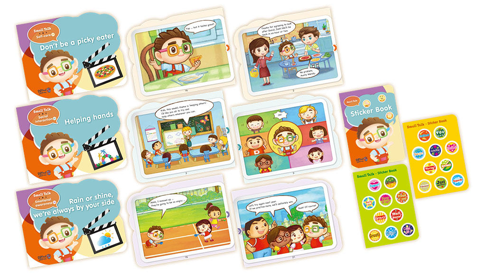
Self-care 01 Getting dressed
故事简介：Donut 和 Olivia 学习如何穿衣服，Donut 还学会了穿鞋子。
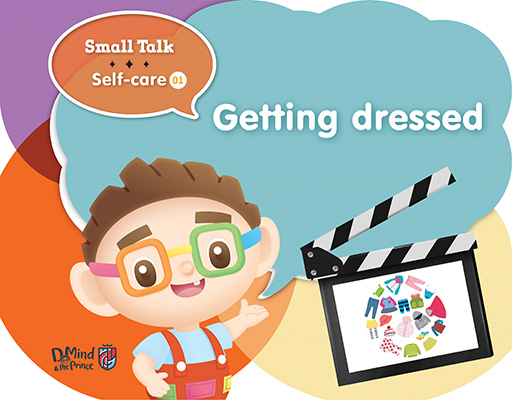
1.
What are these?
These are clothes / clothing items.
这些是什么？
这些是衣服 / 衣物。
2.
This story is called ʻGetting dressed'. What do you think this story is about?
这篇故事名叫 Getting dressed，你认为这个故事说什么？
3.
Why do we need clothes?
We put on clothes to protect our body and keep ourselves warm.
为什么我们需要穿衣服？
我们穿衣服是为了保护我们的身体和保暖。
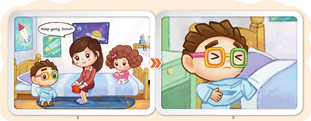
4.
Where is Donut?
Donut is in his bedroom.
Donut 在哪里呢？
Donut 在他的卧室里。
5.
What is Donut doing?
Donut is putting on his clothes.
Donut 在做什么呢？
Donut 在穿衣服。
6.
Can you put on clothes by yourself?
你能够自己穿衣服吗？
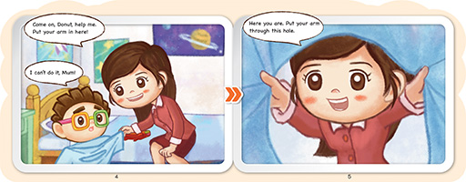
7.
Can Donut put on his clothes by himself? Who helps Donut?
No, he can't. Mum helps Donut.
Donut 能够自己穿衣服吗？谁帮助 Donut？
不，他不能够。妈妈帮助 Donut。
8.
What do we do first when putting on a t-shirt?
We put our arms through the armholes first.
穿 T 恤衫时我们要先怎么做？
我们先把双手穿过袖子。
9.
How can we ask for help?
We can say, 'Can you help me please?'.
我们如何向别人求助？
我们可以说“请问你能够帮我吗？”
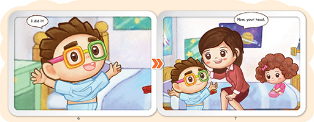
10.
After our arms go through the armholes, what do we do?
We put the head through the collar and pull down the t-shirt.
双手穿过袖子后，我们接下来做什么？
我们将头穿过领口，并下拉 T 恤衫
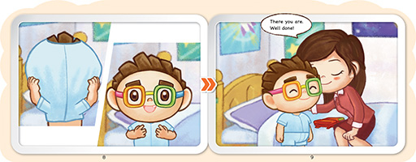
11.
How does Donut feel after he puts on his shirt by himself?
He feels happy / glad that he can do it himself.
Donut 自己穿好衬衫后觉得怎样？
他觉得开心 / 高兴，因为他能自己穿衣服了。
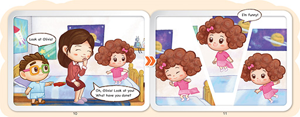
12.
What does Olivia try to put on?
She tries to put on a pair of shorts.
Olivia 尝试穿上什么？
Olivia 尝试穿上短裤。
13.
Does Olivia dress up properly? Why?
No, she puts both legs through the same hole in her shorts.
Olivia 穿好了吗？为什么？
不，她将两条腿放进了短裤的同一个裤管内。
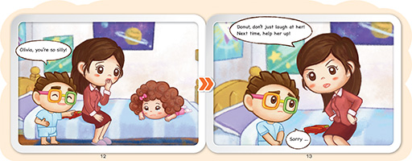
14.
What happens to Olivia? How does she feel?
She falls down on the bed. She feels sad / embarrassed.
Olivia 发生了什么事？她觉得怎样？
Olivia 跌倒在床上。她觉得伤心 / 尴尬。
15.
What does Donut do? Is it the right thing to do?
Donut laughs at Olivia. It's not the right thing to do.
Donut 在做什么？那样做对吗？
他在取笑 Olivia。那样做不对。
16.
What should Donut do instead of laughing at her?
He should help Olivia to get up. / He should help Olivia by teaching her how to put on her shorts.
Donut 应该怎样做、而不是取笑她？
他应该帮忙扶起 Olivia / 他应该教 Olivia 如何穿短裤。
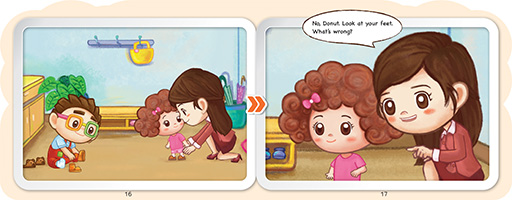
17.
What are Donut and Olivia doing?
They are putting on socks and shoes.
Donut 和 Olivia 在做什么？
他们在穿袜子和鞋子。
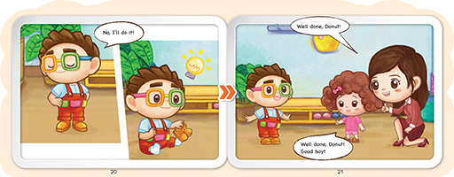
18.
Why does Donut take off his shoes and put them on again?
It is because he put his shoes on wrong.
Donut 为什么把鞋子脱下再穿上？
因为他穿错了鞋子。
19.
Do you think Donut is a good boy? Why?
Yes, because he tries to put on his shoes by himself.
你认为 Donut 是个好孩子吗？为什么？
是，因为他尝试自己穿上鞋子。
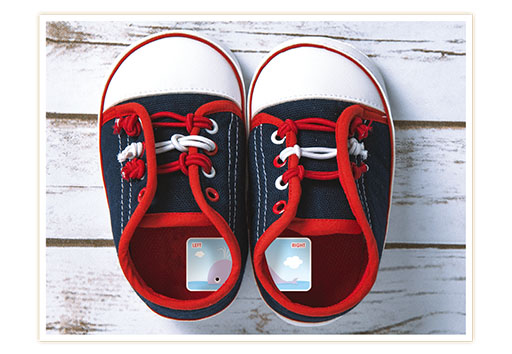
Follow-up activities
延伸活动
It is common for young children to put their shoes on the wrong feet. To make it easier for them, parents can cut up a sticker into left and right and put them in the sole of the shoe. Ask children to place the shoes in the correct side before putting on the shoes.
小朋友不容易分辨左边和右边的鞋子，这是常见现象。为了让他们穿鞋更加容易，爸妈可以将一张贴纸剪开左右两边，贴到鞋垫上。让孩子按贴纸图案把鞋子放好左右两边，然后才穿上。
Self-care 02 I need to use the toilet
故事简介：Donut 和 Olivia 跟妈妈逛街，在商场内，Donut突然要去洗手间，过程中他学习到怎样使用公众场所的洗手间。
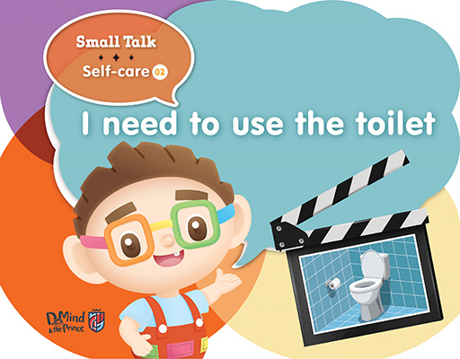
1.
Where is this place?
This is the bathroom.
这里是什么地方？
这里是洗手间。
2.
What do you see in the picture?
I see a toilet and a roll of toilet paper.
你在图片中看到了什么？
我看到抽水马桶和一卷厕纸。
3.
When do we use a toilet?
We use a toilet when we need to go wee wee / poo poo.
我们什么时候上厕所？
当我们需要大便或小便的时候，我们上厕所。
4.
What does Mum ask Donut to do?
Mum asks Donut to tidy up his toys.
妈妈吩咐 Donut 做什么？
妈妈吩咐 Donut 收拾他的玩具。
5.
Do you tidy up your toys by yourself?
你是自己收拾玩具吗？
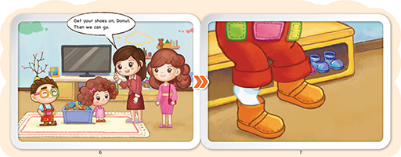
6.
What is Donut doing?
Donut is putting on his shoes.
Donut 正在做什么？
Donut 正在穿鞋子。
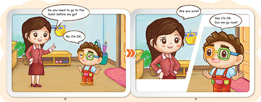
7.
What does Mum ask Donut?
She asks Donut if he needs to go to the toilet before they go.
妈妈叫 Donut 做什么？
妈妈问 Donut 要不要去厕所，然后再出发。
8.
How does Donut feel about going shopping?
He feels excited / happy.
Donut 对去购物感觉如何？
他感到兴奋 / 高兴。
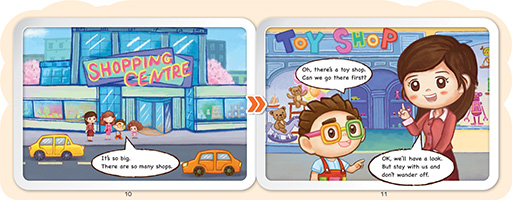
9.
Which shop does Donut want to go to?
Donut wants to go to the toy shop.
Donut 想去哪个店铺呢？
Donut 想去玩具店。
10.
Do you like to go shopping? What is your favourite shop?
你喜欢购物吗？你最喜欢什么商店呢？
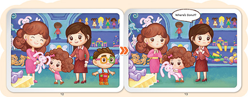
11.
Where are they?
They are at the toy shop.
他们在哪里呢？
他们在玩具店里。
12.
What does Olivia want to do?
She wants to play with the toy bunny.
Olivia 想做什么？
她想玩玩具兔。
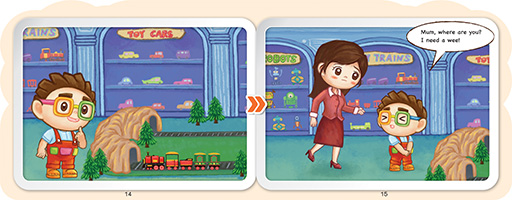
13.
What is Donut looking at?
He is looking at a toy train set.
Donut 在看什么？
他正在看玩具火车。
14.
What does Donut want to do?
He wants to have a wee.
Donut 想做什么？
他想去小便。
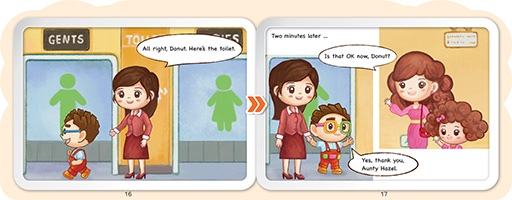
15.
How many toilets are there in the picture?
There are 2 toilets. One for boys and one for girls.
图中有几个厕所？
两个厕所，男厕所和女厕所。
16.
Which toilet does Donut go to?
He goes to the toilet for boys.
Donut 去哪个厕所？
他去男厕所。
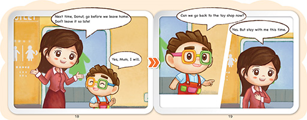
17.
Why should we go to the toilet before we leave home?
It is because we may not find a toilet on the street.
为什么我们离开家前要先去厕所？
因为我们在街道上可能找不到厕所。
Follow-up activities
延伸活动
Some children may find it scary to use a toilet at the early stage of potty training. Parents can make it fun by using a simple toilet training activity. Add a bit of blue watercolour to the water in your potty and get your child to watch it turn green after yellow pee is added to it.
如厕训练初期，有些孩子可能会觉得上厕所很可怕。家长可以通过一个简单的如厕训练活动令上厕所变得有趣。将一些蓝色水彩液加在你的厕所中，孩子如厕排出黄色小便时，让他看到水由蓝色变成绿色。
Self-care 03 Don't be a picky eater
故事简介：Donut 学习不偏食，愿意尝试多种不同种类的食物
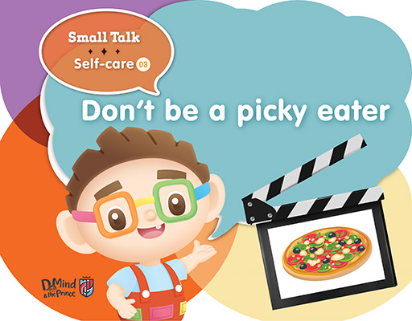
1.
What do you see in the picture?
I see a pizza.
你在图片中看到了什么？
我看到一个比萨饼。
2.
Do you like pizza? What is your favourite food?
你喜欢吃比萨饼吗？你最喜欢什么食物？
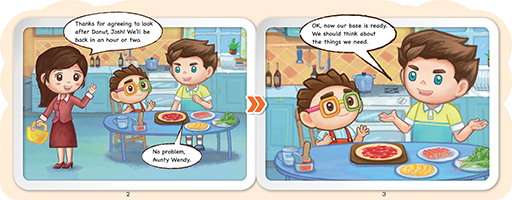
3.
Where are Donut, Josh and Mum?
They are in the kitchen / dining room.
Donut，Josh 和妈妈在哪里？
他们在厨房 / 餐厅里。
4.
Donut and Josh are preparing some food. What do you think they are going to make?
They are going to make a pizza.
Donut 和 Josh 正在准备一些食物。你认为他们将要制作什么食物？
他们将要做比萨饼。
5.
What do you like to have on your pizza?
你喜欢比萨饼上有什么材料？
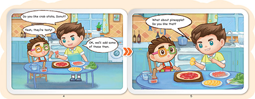
6.
What does Josh put on the pizza first?
Josh puts some crab sticks on the pizza.
Josh 首先把什么放在比萨饼上？
Josh 将一些蟹肉棒放在比萨饼上。
7.
What does Josh want to put on the pizza next?
Josh wants to put some pineapple on the pizza.
Josh 之后想放些什么在比萨饼上？
Josh 想在比萨饼上放些菠萝。
8.
Do you like pineapples? Why?
你喜欢菠萝吗？为什么？
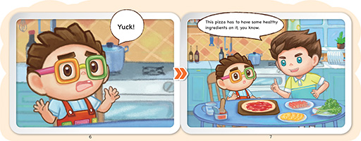
9.
Does Donut like pineapples? How do you know?
No, Donut doesn't like pineapples. He says 'yuck'.
Donut 喜欢菠萝吗？你怎么知道呢？
不，Donut 不喜欢菠萝。他说“难吃”。
10.
Why does Josh put pineapples on the pizza?
It is because pineapples are healthy.
为什么 Josh 用菠萝做比萨饼？
因为菠萝是健康的食物。
11.
What other healthy ingredients can we put on a pizza?
我们还可以在比萨饼上放什么其他的健康配料？
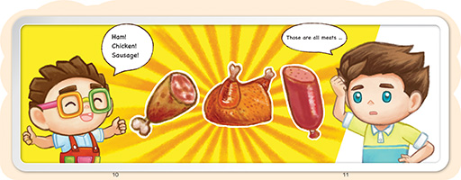
12.
What does Donut want to have on a pizza?
He wants to have ham, chicken and sausage on the pizza.
Donut 想在比萨饼上放什么材料？
他想在比萨饼上放火腿、鸡肉和香肠。
13.
Can we just eat meat? What other things do we also need to eat?
No, we also need to eat other foods like vegetables and rice.
我们可以只吃肉类吗？我们还需要吃什么其他种类的食物？
不，我们还需要吃其他种类的食物，例如蔬菜和米饭。
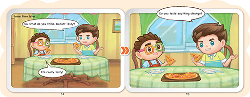
14.
Does Donut like the pizza?
Yes, he thinks the pizza is tasty.
Donut 喜欢比萨饼吗？
是的，他认为比萨饼很好吃。
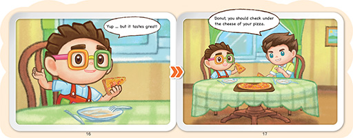
15.
What other ingredient do you think is in the pizza?
Spinach.
你认为比萨饼里还有哪些其他配料？
菠菜。
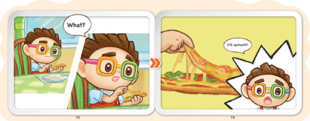
16.
How does Donut feel when he discovers spinach in the pizza?
He feels surprised.
Donut 在比萨饼中发现菠菜时感觉如何？
他感到惊讶。
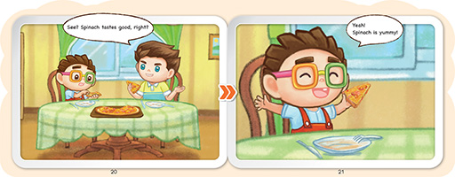
17.
Does Donut like spinach now?
Donut 现在喜欢菠菜吗？
18.
Is there any food you do not like?
Are you willing to give it another try?
你不喜欢什么食物？
你愿意再尝试一次不喜欢的食物吗？
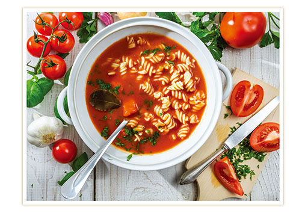
Follow-up activities
延伸活动
Is there certain food your child is not willing to eat? Try to make it in a different way. If your child does not like carrots with rice, what about carrot and tomato soup? A lot of times children may not even notice and you can tell them about it before they finish their last spoonful.
你的孩子有不愿意吃的食物吗？尝试以其他方式烹调孩子不喜欢的食物。如果你的孩子不喜欢胡萝卜配米饭， 可以让他们尝试胡萝卜西红柿汤。很多时候，孩子可能不会发现汤里有胡萝卜。你可以在他们吃完最后一口之前告诉他们。
Self-care 04 Tidying up
故事简介：放学了，Donut 和他的朋友们分工合作，帮助老师清洁课室。
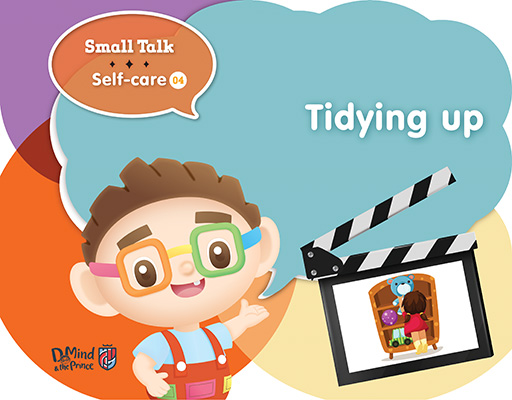
1.
What is the girl in the picture doing?
She is tidying up her toys.
图片中的女孩正在做什么？
她正在收拾玩具。
2.
Do you help tidy up toys at school? Where do you put them?
你在学校帮助收拾玩具吗？你把它们放在哪里？
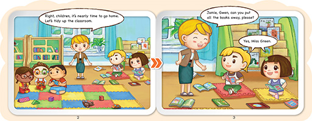
3.
Where are Donut and the children?
They are at school.
Donut 和其他小朋友在哪里？
他们在学校。
4.
Who is Miss Green?
Miss Green is the teacher.
Miss Green 是谁？
Miss Green 是老师。
5.
What are Jamie and Gwen doing?
They are reading.
Jamie 和 Gwen 在做什么？
他们正在阅读。
6.
Do you like reading? What is your favourite book?
你喜欢阅读吗？你最喜欢什么书？
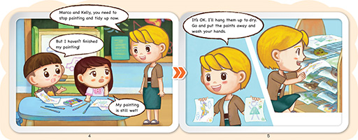
7.
What are Marco and Kelly doing?
They are painting.
Marco 和 Kelly 在做什么？
他们在画画。
8.
Do you like painting? What do you like to draw?
你喜欢画画吗？你喜欢画什么？
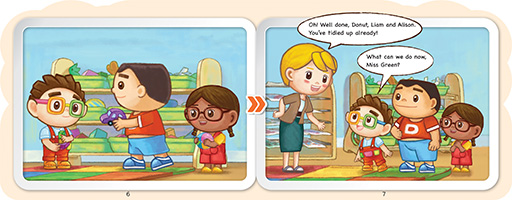
9.
What do Donut, Liam and Alison do?
They help tidy up the toys.
Donut，Liam 和 Alison 在做什么？
他们在收拾玩具。
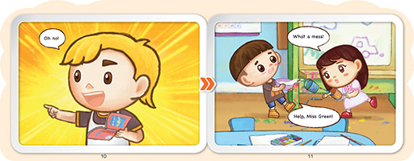
10.
What happens to Marco and Kelly?
They spill paint and water on the floor.
Marco 和 Kelly 发生什么事？
他们将颜料和水洒在地板上。
11.
What can we do when we make a mess?
We can say 'sorry' and clean up.
当我们搞得乱七八糟，应该怎么办？
我们可以说“对不起”并进行清理。
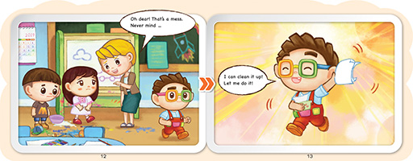
12.
What does Donut bring to clean up?
He brings some tissues / paper towels to clean up.
Donut 用什么来进行清理？
他用一些纸巾来进行清理。
13.
Do you help to clean up at home?
What can you do to keep your home clean?
你在家里帮忙打扫吗？
你该怎么做才能保持家中清洁？
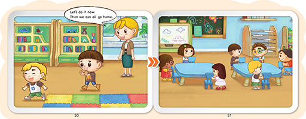
14.
What is the last thing the children need to do before going home?
They have to put their chairs under the table.
孩子们回家前需要做的最后一件事是什么？
他们必须把椅子放在桌子下面。
15.
Do you help clean up at school?
What can you do to keep your school clean?
你在学校帮忙打扫吗？
你该怎么做才能保持学校整洁？
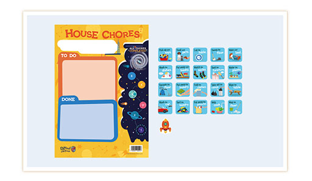
Follow-up activities
延伸活动
Teach your child to take responsibility at home by giving them simple tasks that they can manage, such as tidying up their toys or putting a used napkin in the bin. The house chores chart can also be useful to visualize what children need to do and what achievements they have made.
通过给孩子一些他们能够做得到的简单家务来教导孩子在家中承担责任，例如，整理自己的玩具或将用过的餐巾放在垃圾箱中。爸妈也可以利用家务清单让小朋友看到需要做的家务、以及他们完成的成果。
Self-care 05 Sometimes we don't share
故事简介：Donut 告诉 Alison 有些东西不能与朋友分享。
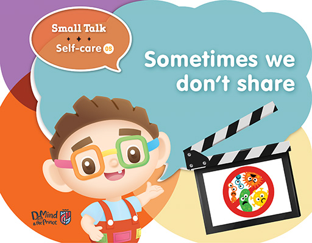
1.
What is the girl in the picture doing?
She is tidying up her toys.
图片中的女孩正在做什么？
她正在收拾玩具。
2.
Do you help tidy up toys at school? Where do you put them?
你在学校帮助收拾玩具吗？你把它们放在哪里？
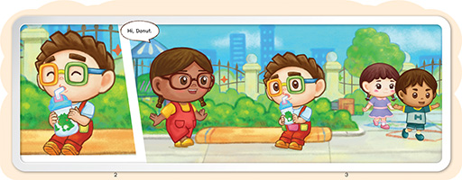
3.
Where are Donut and the children?
They are at school.
Donut 和其他小朋友在哪里？
他们在学校。
4.
Who is Miss Green?
Miss Green is the teacher.
Miss Green 是谁？
Miss Green 是老师。
5.
What are Jamie and Gwen doing?
They are reading.
Jamie 和 Gwen 在做什么？
他们正在阅读。
6.
Do you like reading? What is your favourite book?
你喜欢阅读吗？你最喜欢什么书？
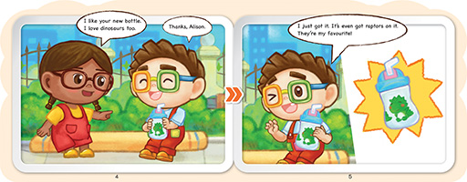
7.
What are Marco and Kelly doing?
They are painting.
Marco 和 Kelly 在做什么？
他们在画画。
8.
Do you like painting? What do you like to draw?
你喜欢画画吗？你喜欢画什么？
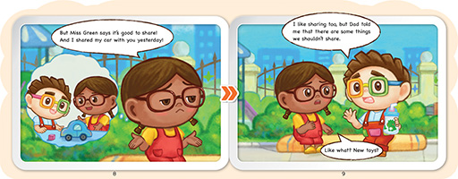
9.
What do Donut, Liam and Alison do?
They help tidy up the toys.
Donut，Liam 和 Alison 在做什么？
他们在收拾玩具。
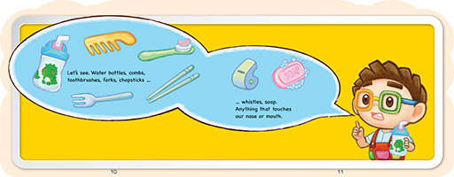
10.
What happens to Marco and Kelly?
They spill paint and water on the floor.
Marco 和 Kelly 发生什么事？
他们将颜料和水洒在地板上。
11.
What can we do when we make a mess?
We can say 'sorry' and clean up.
当我们搞得乱七八糟，应该怎么办？
我们可以说“对不起”并进行清理。
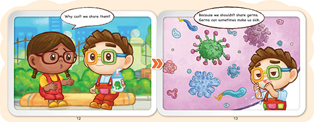
12.
What does Donut bring to clean up?
He brings some tissues / paper towels to clean up.
Donut 用什么来进行清理？
他用一些纸巾来进行清理。
13.
Do you help to clean up at home?
What can you do to keep your home clean?
你在家里帮忙打扫吗？
你该怎么做才能保持家中清洁？
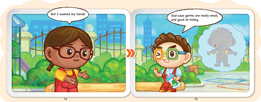
14.
What is the last thing the children need to do before going home?
They have to put their chairs under the table.
孩子们回家前需要做的最后一件事是什么？
他们必须把椅子放在桌子下面。
15.
Do you help clean up at school?
What can you do to keep your school clean?
你在学校帮忙打扫吗？
你该怎么做才能保持学校整洁？
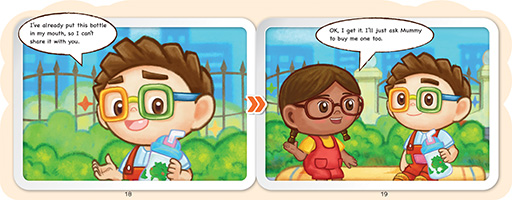
14.
What is the last thing the children need to do before going home?
They have to put their chairs under the table.
孩子们回家前需要做的最后一件事是什么？
他们必须把椅子放在桌子下面。
15.
Do you help clean up at school?
What can you do to keep your school clean?
你在学校帮忙打扫吗？
你该怎么做才能保持学校整洁？
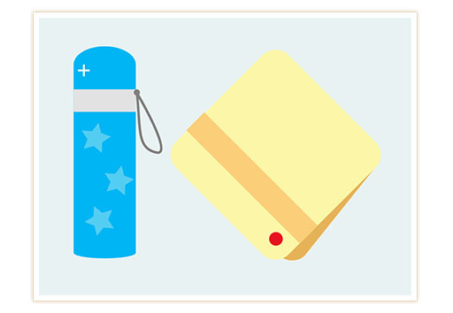
Follow-up activities
延伸活动
Teach your child to take responsibility at home by giving them simple tasks that they can manage, such as tidying up their toys or putting a used napkin in the bin. The house chores chart can also be useful to visualize what children need to do and what achievements they have made.
通过给孩子一些他们能够做得到的简单家务来教导孩子在家中承担责任，例如，整理自己的玩具或将用过的餐巾放在垃圾箱中。爸妈也可以利用家务清单让小朋友看到需要做的家务、以及他们完成的成果。
Self-care 06 Keeping myself clean and tidy
故事简介：放学了，又累又饿的 Donut 想吃东西。但是他太脏了，先得忍耐一下。于是他回到家立刻洗澡，换衣服，然后才去享用零食。
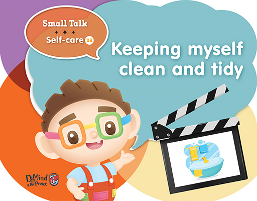
1.
Where is this place?
This is the bathroom.
这个地方是哪里？
这里是浴室。
2.
What is in the bath?
There is a rubber duck in the bath.
浴缸内有什么？
浴缸内有橡胶小鸭子。
3.
Why do we have to take a bath or shower every day?
We have to take a bath or shower every day to keep ourselves clean and tidy.
为什么我们必须每天泡澡或者淋浴？
我们必须每天泡澡或者淋浴，是为了保持身体清洁。
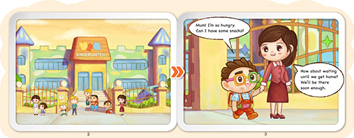
4.
Where is this?
This is a school / kindergarten.
这里是什么地方？
这里是学校 / 幼儿园。
5.
School finishes and it's time to go home. Who comes to pick up Donut from school?
Mum comes to pick up Donut from school.
放学了、是回家的时候了。谁来接 Donut 放学呢？
妈妈来接 Donut 放学。
6.
How does Donut feel?
Donut feels very hungry.
Donut 有什么感觉呢？
Donut 感到很饥饿。
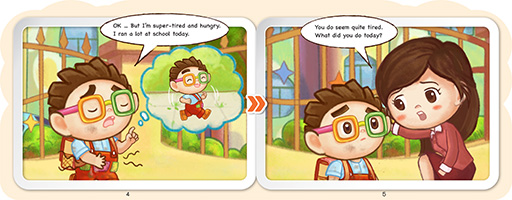
7.
Why does Donut feel tired and hungry?
He feels tired and hungry because he ran a lot at school.
为什么 Donut 感到疲倦和饥饿呢？
他感到疲倦和饥饿是因为 Donut 在学校跑来跑去。
8.
What do you think he wants to do most?
I think he wants to rest and have something to eat.
你认为他最想做的事是什么？
我认为他想休息和吃东西。
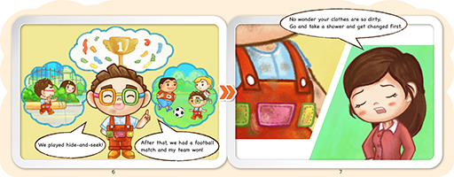
9.
What did Donut do at school? What games did he play?
He played hide and seek and he played football.
Donut 在学校里做了什么？他玩了什么游戏？
他玩了捉迷藏和踢了足球。
10.
Do you like these games? What do you like to do at school?
你喜欢这些游戏吗？你喜爱在学校里做什么？
11.
Donut is dirty, what does he have to do?
He has to go home, take a shower and get changed.
Donut 的身体及衣服都弄脏了，他必须做什么事情呢？
他必须回家洗淋浴和换衣服。
12.
Why do we have to clean our hands before eating?
We have to clean our hands before eating because there are germs on our hands. If we do not clean them before eating, the germs will get into our body.
我们为什么在吃东西之前必须洗手？
我们在吃东西之前必须洗手，是因为我们手上有细菌。如果我们在吃东西之前不洗手，细菌将会随食物进入我们的身体。
13.
What happens if germs get into our body?
We will get sick / have a tummy-ache.
如果细菌进入我们的身体会发生什么事情呢？
我们将会生病或肚子痛。
14.
Have you had a tummy-ache before?
How did it make you feel?
你以前有肚子痛吗？它让你有什么感觉？
15.
What should Donut do when he gets home?
He should take a bath or shower and change into some clean clothes.
Donut 回到家中应该做什么事？
他应该泡澡或者淋浴，并且换上一些干净衣服。
16.
Donut feels happy when he takes a bath. Do you
like to take a bath? Why?
Donut 泡澡时感到很愉快。你喜欢泡澡吗？为什么？
17.
What does Mom prepare for Donut?
Mum prepares some biscuits for Donut.
妈妈为 Donut 预备了什么呢？
妈妈为 Donut 预备了饼干。
18.
Do you like biscuits? What is your favourite snack?
你喜欢饼干吗？你最喜欢什么点心呢？
Follow-up activities
延伸活动
After reading the story, parents can take their child to the bathroom to wash their hands. Tell them after washing their hands they can have a snack like Donut.
阅读过这篇故事书后，爸妈可以带领孩子到浴室洗手。 告诉孩子，在洗手以后，他就可以像 Donut 一样吃点心。
Self-care 07 Bedtime story
故事简介：Donut 要上床睡觉了，他会先收拾好玩具、然后换睡衣、刷牙和洗脸，今天爸爸还读了一个有趣的故事呢！
1.
This story is called ʻBedtime storyʼ. What do you think the story is about?
这个故事名叫 bedtime story (睡前故事）。你认为这个故事和什么有关？
2.
Do you like reading? What is your favourite book?
你喜欢看图书吗？你最喜欢哪本图书？
3.
Who do you like to read with?
你喜欢和谁一起看图书？
4.
Who can you see in the picture?
I can see Donut and Dad.
你能够在图片中看到谁？
我能够看到 Donut 和爸爸。
5.
What is Donut doing?
He is playing with a jigsaw puzzle.
Donut 在做什么？
他在玩拼图。
6.
Do you help to tidy up your toys before you go to bed?
你上床睡觉前会帮忙收拾你的玩具吗？
7.
What does Donut have to do before going to bed?
He has to put on his pyjamas, brush his teeth and wash his face.
Donut 上床睡觉前必须做什么？
他必须穿上睡衣、刷牙和洗脸。
8.
Do you do these things before you go to bed?
Do you do it yourself or do you need some help?
你上床睡觉之前会做这些事吗？你是自己做，还是需要别人帮忙？
9.
What does Donut want to do before going to bed?
Donut wants Dad to read a story to him.
Donut 想要睡觉前做什么？
Donut 想要爸爸给他读一个故事
10.
Which book does Donut want Dad to read?
He wants Dad to read The Wizard of Oz.
Donut 想要爸爸读哪本书？
他想要爸爸读《绿野仙踪》。
11.
Do you think it's a good book to read before bed? Why?
No, because the book is too big. / No, because the story is too long.
你认为这是一本适合在睡觉前读的书吗？为什么？
不，因为这本书太厚了。 / 不，因为这个故事太长了。
12.
What can we say to Mum and Dad before going to bed?
We can say 'night night', 'sleep well' or 'sweet dreams'.
我们睡觉前可以对妈爸说什么？
我们可以说“晚安”、“睡个好觉”或“做个好梦”。
13.
How does Donut feel?
Donut feels tired / sleepy.
Donut 感觉如何？
Donut 感到疲倦 / 困倦。
14.
What is Donut dreaming about?
Donut is dreaming about the story of The Wizard of Oz.
Donut 梦到什么？
Donut 梦见《绿野仙踪》的故事。
15.
What do you like to do before going to bed?
你睡觉前喜欢做什么？
Follow-up activities
延伸活动
A bedtime routine helps children to wind down and prepare for bed. Keep the bedtime routine simple and short, and try to be consistent every night. For example, if you want your child to go to bed at 8, start your routine around 15 minutes before bedtime. It may involve the process of putting on pyjamas, brushing your child's teeth, and reading them a bedtime story. Build a routine that you and your child are comfortable with, and stick to it. Soon your child's body clock will adjust to the routine which help your child to fall asleep easier.
睡前常规可以帮助孩子平静下来，并为睡觉做准备。睡前常规应尽量简短，并尽量保持每晚都一样。例如，如果你想孩子在 8 点上床睡觉，请在睡前 15 分钟左右开始常规活动。常规活动可以包括穿睡衣、为孩子刷牙和为孩子阅读睡前故事。建立适合你和孩子的睡前常规，并坚持每天执行。很快，你孩子的生理时钟便会调整到睡前常规，这有助孩子更容易入睡。
Self-care 08 Cover your mouth when you cough
故事简介：爸爸教导 Donut 在咳嗽时怎样保持个人卫生
1.
What can you see in the picture?
I can see a handkerchief / a tissue.
你能够在图片中看到什么？
我能够看到一块手帕 / 纸巾。
2.
What do you do when you cough?
咳嗽时你会怎么做？
3.
Where are Donut and Dad?
They are in a supermarket.
Donut 和爸爸在哪里？
他们在一家超市
4.
What is Donut doing?
He is sneezing / coughing.
Donut 正在做什么？
他在打喷嚏 / 咳嗽。
5.
What does Dad do?
He uses a handkerchief / tissue to cover his nose and mouth.
爸爸怎样反应？
爸爸用手绢 / 纸巾掩住鼻子和嘴巴。
6.
Do you think we can catch a cough with a net or with our hands? How do you think we can catch a cough?
你认为我们可以用网或用双手拦住咳嗽吗？你认为我们如何可以拦住咳嗽？
7.
How do some people catch a cough?
Some people catch a cough with their hands.
有些人如何拦住咳嗽？
有些人用自己的手拦住咳嗽。
8.
What happens if people use their hands to catch a cough and touch something?
They will spread germs through the things they touch.
如果人们用手拦住咳嗽，又碰触其他东西，会出现什么情况？
如他们将会通过碰触的东西将病菌传播开来。
9.
What can we do after we cough in our hands?
We can wash our hands.
在双手拦住咳嗽后，我们可以怎样做？
我们可以洗手。
10.
What can we do if we cannot wash our hands after coughing in them?
We can wipe our hands with wet wipes. / We can clean our hands with sanitizers.
如果在双手拦住咳嗽后，我们不能洗手，可以怎么办？
我们可以用湿纸巾擦手。 / 我们可以用消毒搓手液清洁双手。
11.
What does Dad tell Donut to use to catch a cough?
Dad tells Donut to use a hanky to catch a cough.
爸爸教 Donut 用什么拦住咳嗽？
爸爸教 Donut 用手绢拦住咳嗽。
12.
Do you use a hanky / handkerchief?
你使用手绢吗？
13.
Where does Donut put his hanky?
He puts it in his pocket.
Donut 把手绢放在哪里？
他把手绢放在口袋里。
14.
Where are Donut and Dad?
They are at home.
Donut 和爸爸在哪里？
他们回到家里。
15.
Who are at the door to greet them?
Mum and Mabel are at the door.
谁在门口迎接他们？
妈妈和 Mabel。
16.
What is Donut trying to show Mabel?
He is trying to show Mabel how to catch a cough with a hanky.
Donut 向 Mabel 示范做什么？
他正向 Mabel 示范如何用手绢拦住咳嗽。
17.
What does Mabel want to do?
She wants to take Donut's hanky.
Mabel 想做什么？
Mabel 想拿走 Donut 的手绢。
18.
Do you think we should share a hanky? Why?
No, we should not share a hanky. We may pass germs to others if we share a hanky.
你认为我们应该与别人共享手绢吗？为什么？
不，我们不应该与别人共享手绢。如果我们共享手绢，我们可能会将病菌传染给别人。
Follow-up activities
延伸活动
It's important to practice good hygiene skills to prevent getting and spreading germs. First, you can show how to cover your mouth with a hanky or tissue when you cough or sneeze. When your child coughs next time, help them to cover their mouth. When you see them doing it by themselves, recognize and praise them by saying 'I saw you covering your mouth when you cough / sneeze! Well done!' They will get into this habit very soon.
为了预防接触和传播病菌，养成良好的卫生习惯是重要的。首先，你可以示范咳嗽或打喷嚏时如何用手绢或纸巾掩住嘴巴。当下次孩子咳嗽时，帮助他们掩住嘴巴。当你看到他们自己能够做到时，可称赞他们：“你咳嗽 / 打喷嚏时，我看见你掩住了嘴巴！做得好！”孩子将很快就会养成这个习惯。
Self-care 09 Be careful!
故事简介：Donut 和 Olivia 正在制作动物面具。但是，他们没有小心使用工具，并弄得一团糟呢！
1.
What can you see in the picture?
I can see a pair of scissors, glue, some crayons and some paper.
你能够在图片中看到什么？
我能够看到一把剪刀、胶水、一些蜡笔和一些纸张。
2.
Do you like to draw or make crafts?
你喜欢画画还是做手工？
3.
What do we have to do when we use scissors?
We have to be careful when we use scissors.
我们使用剪刀时必须注意什么？
我们在使用剪刀时必须小心。
4.
Who comes to visit Donut?
Olivia comes to visit Donut.
谁来探望 Donut？
Olivia 来探望 Donut。
5.
What does Mum plan to do with Donut and Olivia?
She plans to make animal masks with Donut and Olivia.
妈妈打算跟 Donut 和 Olivia 一起做什么？
她打算跟 Donut 和 Olivia 一起制作动物面具。
6.
What animal masks do you want to make?
你想做什么动物面具？
7.
What animal does Donut's Mum draw?
She draws a cat.
Donut 妈妈画了什么动物？
她画了一只猫。
8.
What is Olivia doing?
She is colouring her cat.
Olivia 在做什么？
她正在给小猫面具涂色。
9.
Where is the spilled glue?
It is all over Olivia's hands and hair.
Olivia 把胶水弄在哪里？
Olivia 的双手和头发上都是胶水。
10.
What do we have to do if we have glue on our hands?
We have to wash our hands. / We have to wipe our hands.
如果手上有胶水，我们必须怎么办？
我们必须洗手。 / 我们必须擦手。
11.
How does Donut and Olivia feel about the masks?
They like the masks. / They are happy with the masks.
Donut 和 Olivia 对面具感觉如何？
他们喜欢这些面具。 / 他们对这些面具很满意。
12.
What is Mabel doing?
Mabel is crying.
Mabel 在做什么？
Mabel 在哭。
13.
Who is holding Mabel?
Aunty Hazel is holding Mabel.
谁在抱着 Mabel？
Hazel 姨姨在抱着 Mabel。
14.
What do we have to do if we make a mess?
We have to clean up.
我们弄脏了地方后必须怎样做？
我们必须清理好。
15.
How do you help clean up at home?
你在家里会怎样帮助家人做好清理？
Follow-up activities
延伸活动
Parents can make an animal mask with their child after reading this book. Allow them to choose their favourite animal, and draw it on a piece of paper. Parents can practice using scissors with children by holding their hands and cutting together. This allows them to use finger muscles and practice fine motor skills.
读完这本书后，父母可以和孩子一起制作动物面具。让他们选择自己喜欢的动物，然后画在一张纸上。父母可以和孩子一起练习如何使用剪刀，先握住孩子的手，然后一起剪。这活动能锻炼小朋友手指肌肉和精细动作。
Self-care 10 Watch out!
故事简介：Donut 在游泳池度过快乐的一天，并在那里学会遵守安全规则。
1.
What can you see in the picture?
I can see a sign.
你能够在图片中看到什么？
我能够看到一个标志。
2.
Where do you think we can find this sign?
We can find this sign in the mall / at the swimming pool.
你认为我们在哪里可以找到这个标志？
我们可以在商场里 / 游泳池边找到这个标志。
3.
What does this sign tell us?
It tells us to be careful not to fall down.
这个标志告诉我们什么？
它告诉我们要小心地滑，避免跌倒。
4.
Where are Donut, Gwen and their mums?
They are at the swimming pool.
Donut, Gwen 和妈妈在哪里？
他们在游泳池。
5.
What are they wearing?
They are wearing swimsuits.
他们穿什么衣物？
他们穿着泳衣。
6.
Do you like swimming?
你喜欢游泳吗？
7.
Why is it slippery at the swimming pool?
It is because people are wet when they leave the pool. The water drips on the ground and makes it slippery.
为什么游泳池里是湿滑的？
这是因为人们在离开水池时身上是湿的。水滴到地面上，地面就变得湿滑。
8.
What happens to Gwen?
She slips and falls down.
Gwen 发生了什么事？
她滑脚了并摔倒了。
9.
What does Donut do?
He goes and checks on Gwen.
Donut 在做什么？
他走过去，并看看 Gwen，有没有跌伤。
10.
What will you do if we see your friend falls?
如果我们看到朋友摔倒了，你会怎么做？
11.
What is the other boy doing?
He is splashing water at Gwen.
另一个男孩在做什么？
他在向 Gwen 泼水。
12.
Do you think it's nice to splash water at others? Why?
No, because the water will get into other's eyes.
你觉得向别人泼水做得对吗？为什么？
不对，因为水会进入别人的眼睛。
13.
Can you swim? Would you like to learn swimming? Why?
你会游泳吗？你想学游泳吗？为什么？
14.
What can we use to help us swim?
We can use armbands / a floatie.
我们可以用什么来协助我们游泳？
我们可以使用浮水臂圈 / 救生圈。
15.
What does Gwen do in the water?
She takes off her armbands.
Gwen 在水中做什么？
她脱下浮水臂圈。
16.
Do you think Gwen should take off her armbands? Why?
No, she should not take off her armbands because she cannot swim and it is dangerous.
你认为 Gwen 应该脱下她的浮水臂圈吗？为什么？
不，她不应该脱下她的浮水臂圈，因为她不会游泳，这是危险的。
17.
What is Gwen doing? How does Gwen feel?
Gwen is crying. She feels scared / sad.
Gwen 在做什么？她感觉如何？
Gwen 在哭。她感到害怕 / 悲伤。
18.
What does Gwenʼs mum tell her?
Don't take off the armbands untll they can swim properly.
Gwen 的妈妈告诉她什么了？
在能够很好地游泳之前，不应该脱下浮水臂圈。
19.
What do we have to do when we get out of the pool?
We have to hold the handrails.
当我们离开游泳池时，我们必须做什么呢？
我们必须握住扶手。
Follow-up activities
延伸活动
Children can sometimes hurt themselves while they are playing. Parents can guide their children to set up a few simple rules together before they go to the park or to the pool. Explain to them why the rules are important. Remind them of the rules while they are playing and praise them if they can follow the rules.
孩子玩耍时，有时可能会受伤。父母带孩子去公园或游泳池之前，可以指导孩子制定一些简单规则。向他们解释，为什么规则是重要的。玩耍时提醒他们这些规则， 当他们能够遵守规则时加以称赞。
Social interaction 01 Helping hands
故事简介：Miss Green 教导 Donut 及其他小朋友要帮助别人。
1.
What can you see in the picture?
I can see two people and a bridge made of jigsaw pieces.
你能够在图片中看到什么？
我能够看到两个人和一座由拼图制成的桥。
2.
What are the two people doing?
One person is helping another person to get on the bridge.
这两个人在做什么？
一个人正在帮助另一个人上桥。
3.
If you see somebody who needs help, would you help them?
如果你看到有人需要帮助，你会帮助他们吗？
4.
Where are Donut and his friends?
They are at school.
Donut 和他的朋友们在哪里？
他们在学校里。
5.
How do Donut and his friends feel about helping others?
They feel happy.
Donut 和他的朋友们对帮助他人有何感想？
他们感到高兴。
6.
Do you like helping others? How does that make you feel?
Yes, I feel happy / glad when I help others.
你喜欢帮助别人吗？帮助别人让你有什么感觉？
是的，我感到快乐 / 高兴。
7.
What sound do Donut and Kelly hear? What do you think it means?
They hear the bell ringing. It means it is time to clean up.
Donut 和 Kelly 听见什么声音？你认为这代表什么？
他们听到铃声响起。这代表是时候收拾玩具了。
8.
What is Kelly doing? Why is she having trouble?
She is trying to put the box away, but the box is too heavy for her.
Kelly 在做什么？她为什么遇到麻烦？
她试图把玩具箱放好，但是箱子对她来说太重了。
9.
If you were Donut, how can you help Kelly?
He can help Kelly carry the box.
如果你是 Donut，你会如何帮助 Kelly？
我会帮助 Kelly 搬箱子。
10.
Where are the children?
They are at the playground.
孩子们在哪里？
他们在操场上。
11.
How do the children feel after playing at the playground?
They feel hot / sweaty / thirsty.
孩子们在操场上玩耍后有什么感觉？
他们感到很热 / 出汗 / 口渴。
12.
How does Liam help Donut when he hears Donut forgot his hanky?
Liam gives Donut some tissues.
当听到 Donut 忘了带手绢时，Liam 如何帮助他？
Liam 给 Donut 一些纸巾。
13.
How did Donut help Kelly?
He helped Kelly to put the toy box on the shelf.
Donut 如何帮助 Kelly？
他帮助 Kelly 将玩具箱放在了架子上。
14.
How did Kelly help Alison?
She lent her pencil to Alison.
Kelly 如何帮助 Alison？
她把自己的铅笔借给了 Alison。
15.
How did Marco help Gwen?
He helped Gwen find a book.
Marco 如何帮助 Gwen？
他帮助 Gwen 找到了一本书。
16.
How did Liam help Donut?
He gave Donut some tissues when he was sweaty.
Liam 如何帮助 Donut？
当 Donut 流汗时，Liam 给了 Donut 一些纸巾。
17.
How did all the children help during tea time?
They all helped to lay the table.
吃茶点时，所有孩子们帮忙做了什么？
他们都帮忙去摆好吃点心的餐具。
18.
What do we say after somebody helps us?
We say 'thank you'.
别人帮助我们之后，我们说什么？
我们说“谢谢”。
19.
How do the children feel when Miss Green rewards them with a helper sticker?
They feel excited / glad.
当 Miss Green 给孩子们送上帮手贴纸时，孩子们有什么感觉？
他们感到兴奋 / 高兴。
Follow-up activities
延伸活动
Parents can teach children to be kind and help others by modeling and explaining feelings. Help children to understand how others are feeling, and how we can make them feel happy again. For example, if your child trips and falls on the ground, give them a hug and tell them 'I know you feel sad and painful when you fall. I hope a hug will make you feel better.' Encourage your child to do the same when they see other children fall, and praise them when they do it.
父母可以通过以身作则和说明感受的方式，教育孩子心存善良、帮助他人。教育孩子了解他人的心情，以及我们如何才能使得别人再次感到快乐。例如，当你的孩子绊脚并摔倒在地上，请给他一个拥抱，并告诉他“我知道你跌倒时感到不开心和很痛。我希望这一个拥抱能使你感觉好一点。”鼓励你的孩子看到其他孩子摔倒时做同样的事情。当孩子做得到时，要给他赞许。
Social interaction 02 Sharing is caring
故事简介：Donut 把甜甜圈带回学校作点心，并乐于与朋友分享。中间虽然发生一些小意外，但 Donut 和朋友们仍然高高兴兴，互相分享点心。
1.
What can you see in the picture?
I can see a heart.
你能够在图片中看到什么？
我能够看到一个心型。
2.
Do you like to share things with your friends?
What do you like to share?
你喜欢和朋友们分享东西吗？你喜欢分享什么？
3.
Where are Donut and his friends?
They are at school.
Donut 和他的朋友们在哪里？
他们在学校。
4.
What are the children doing?
They are eating. / They are having some snacks.
孩子们在做什么？
他们在吃东西 / 他们在吃一些点心。
5.
What do Donut, Kelly and Gwen have in their snack box?
Donut has some doughnuts. Kelly and Gwen have some biscuits and an apple.
Donut，Kelly 和 Gwen 的点心盒内有什么食物？
Donut 有一些甜甜圈。Kelly 和 Gwen 有一些饼干和苹果。
6.
What does Gwen want?
Gwen wants to have a doughnut.
Gwen 想要什么？
Gwen 想吃一个甜甜圈。
7.
Does Donut share his food with Gwen? Do you think he is nice?
Yes, Donut shares his food with Gwen. He is nice / kind.
Donut 有沒有跟 Gwen 分享他的食物？你觉得他做得好吗？
是的，Donut 跟 Gwen 分享他的食物。他做得很好 / 他很善良。
8.
What does Kelly want?
Kelly wants to have a doughnut, too.
Kelly 想要什么？
Kelly 也想吃一个甜甜圈。
9.
Does Donut share his food with Kelly?
Yes, Donut shares his food with Kelly.
Donut 有沒有跟 Kelly 分享食物？
是的，Donut 跟 Kelly 分享食物。
10.
What does Jamie want?
Jamie wants to have a doughnut.
Jamie 想要什么？
Jamie 想吃一个甜甜圈。
13.
What does Jamie do? Do you think he does the right thing? Why?
He takes a doughnut from Donut. It is not nice to grab from others.
Jamie 做什么？你认为他做得对吗？为什么？
他从 Donut 那里拿走一个甜甜圈。从别人那里抢东西是不好的。
12.
What does Marco do?
Marco scares Donut from behind.
Marco 做什么？
Marco 从后面吓了 Donut。
13.
How does Donut feel? What does he do?
Donut is scared / surprised. He drops the doughnuts.
Donut 感觉如何？他做了什么事？
Donut 感到害怕 / 惊讶。他把甜甜圈丢到地上。
14.
How do you think Donut feels?
I think Donut feels sad.
你觉得 Donut 有什么感觉？
我认为 Donut 感到不开心。
15.
What did Marco want to do?
He wanted to share his doughnuts with Donut.
Marco 想做什么？
他想与 Donut 分享他的甜甜圈。
16.
How does Donut feel?
He feels happy / glad again.
Donut 感觉如何？
他再次感到快乐 / 高兴。
17.
Would you share your favourite food with your friends? How does sharing make you feel?
你会与朋友们分享自己喜欢的食物吗？分享令你感觉如何？
Follow-up activities
延伸活动
Sharing is not the easiest concept for a child to understand. It may be confusing when sharing sometimes means using something with another person, taking turns or giving things away. It's a good idea to start teaching about sharing when children are young. Introduce the concept of 'my turn, your turn' when they can grasp an object. Practise sharing with your child and praise them when they agree to share by saying 'Thank you for sharing!'.
对于孩子而言，分享不是一个最容易理解的概念。重点是， 分享可以是指与他人一起共享、轮流使用、或者把东西送给别人。好的想法是，在孩子还小的时候，就开始教导他们怎样分享。当孩子能抓住物品时，就要介绍“轮到我了、轮到你了”这样的概念。与孩子一起练习分享，而当他们乐于与你分享时，则要“谢谢你的分享”，以表扬他们。
Social interaction 03 I'm not feeling well
故事简介：Donut 吃太多的零食，后来感到不适，要老师带他去休息。
1.
Do you know what the object in the picture is called?
It is called a thermometer.
你知道图片中的这件物品是什么吗？
这是一个体温计。
2.
What is a thermometer used for?
It is used for taking our body temperature.
体温计是用来做什么的？
它是用来量我们的体温的。
3.
What do we do when we are sick? Who do we go to see?
We go to see a doctor when we are sick. We need to rest and take medicine.
我们生病时该怎样做？我们去见谁？
我们生病时要去看医生。我们需要休息和吃药。
4.
Where are Donut and his friends?
They are at school.
Donut 和他的朋友们在哪里？
他们在学校里。
5.
What are the children doing?
They are eating. / They are having some snacks.
孩子们在做什么？
他们在吃东西。 / 他们在吃点心。
6.
What does Donut eat and drink?
Donut eats some marshmallows and some cookies. He drinks a box of juice.
Donut 在吃什么、喝什么？
Donut 在吃一些棉花糖和一些饼干。他喝了一盒果汁。
7.
What does Donut do?
He shares his cookies with Jamie.
Donut 在做什么？
他与 Jamie 分享他的饼干。
8.
What does Jamie say to Donut?
He says ʻthank youʼ.
Jamie 对 Donut 说什么？
他说“谢谢你”。
9.
What does Jamie share with Donut?
He shares his chocolate with Donut.
Jamie 跟 Donut 分享什么食物？
他与 Donut 分享他的巧克力。
10.
What happens to Donut? How does he feel?
Donut is not feeling well. He feels sick. / His tummy hurts.
Donut 发生什么事？他感觉怎么样？
Donut 不舒服。他感到生病了 / 他的肚子痛。
11.
Who does Jamie ask for help?
Jamie asks Miss Green for help.
Jamie 向谁寻求帮助？
Jamie 向 Miss Green 寻求帮助。
12.
If you need help, who can you ask for help?
当你需要帮忙，会找谁人帮忙？
13.
What does Miss Green do?
She checks Donut's temperature.
Miss Green 做什么？
她检查 Donut 的体温。
14.
Why do you think Donut is not feeling well?
I think Donut is not feeling well because he ate too much.
你认为 Donut 为什么不舒服？
我认为 Donut 感到不舒服是因为他吃得太多。
15.
What does Donut have to do?
He has to take a rest.
Donut 必须做什么？
他必须休息。
16.
Why shouldn't we eat too much?
为什么我们不应该吃太多食物？
Follow-up activities
延伸活动
Children enjoy having snacks, but eating too many snacks may result in many problems such as stomachache or a reluctance to have proper meals. Try to limit your children's snack intake by setting a regular snack time. Prepare a small snack box for your child and let your child know the portion they should have every day. Parents can also allow children to fill their own snack box and choose what they would like to have. Always include a portion of fresh fruits or veggies to make a balanced snack box for your child.
小朋友喜欢吃零食，但是，吃太多零食可能会导致许多问题，例如，胃痛或不愿吃正餐。尝试为小朋友设定固定的零食时间来限制孩子的零食摄入。爸爸妈妈可以为孩子准备一个小食盒，让孩子知道每天应该吃的分量。父母还可以让孩子装自己的零食盒，并且选择自己想要的东西。为孩子提供营养均衡的零食盒，要包括一些新鲜水果或蔬菜。
Social interaction 04 Let's take turns
故事简介：Donut 和朋友去公园玩，过程中他们学懂怎样轮流玩，以及注意安全。
1.
What can you see in the picture?
I can see some people queuing up.
你能够在图片中看到什么？
我能够看到一些人在排队。
2.
When do we queue up?
We queue up when we wait for our turn.
我们什么时候需要排队？
我们轮候时需要排队。
3.
Where is Donut?
He is at home.
Donut 在哪里？
他在家里。
4.
Where is Dad going with Mabel?
He is going to the park with Mabel.
爸爸和 Mabel 要到哪里？
他和 Mabel 要去公园。
5.
Who does Donut see at the park?
He sees Liam, Jamie and Jamie's dad at the park.
Donut 在公园里看见谁？
他在公园里看见 Liam，Jamie 和 Jamie 的爸爸。
6.
What do the children want to do?
They want to go on the swings.
孩子们想做什么？
他们想荡秋千。
7.
Who goes on the swings?
Donut and Jamie go on the swing.
谁在荡秋千？
Donut 和 Jamie 在荡秋千。
8.
What do the children want to do next?
They want to go on the slides next.
孩子们接下来想要做什么？
他们接下来想玩滑梯。
9.
What are Liam and Jamie doing?
They are trying to go on the slide at the same time.
Liam 和 Jamie 在做什么？
他们试图在同一时间玩滑梯。
10.
What should Liam and Jamie do?
They should queue up and take turns.
Liam 和 Jamie 应该怎样做？
他们应该排队、轮流玩。
11.
What happens to the children on the slide?
They bump into each other on the slide.
孩子们在滑梯上发生了什么事？
他们在滑梯上撞在一起。
12.
What should we do when we go on the slide?
We should wait for others to get off the slide before we slide down.
当我们玩滑梯时应该怎样做？
我们应该等他人离开滑梯，然后我们再滑下来。
13.
What other things should we not do at the park?
We should not run without looking. / We should not walk up the slide. / We should not jump from high places.
我们在公园不应该做哪些事情？
我们不应该不观察就乱跑。 / 我们不应该踩在滑梯上向上走。 / 我们不应该从高处跳下来。
14.
How do the children feel?
The children feel happy / joyful.
孩子们感觉如何？
孩子们感到快乐 / 高兴。
15.
Do you like going to the park? What do you like to do at the park?
你喜欢去公园吗？你喜欢在公园玩什么？
Follow-up activities
延伸活动
Help children to understand what they should or should not do at the park, or when they play with their friends, by using some plush toys to role-play at home. Parents can role-play good or bad behaviours and ask children if they are acceptable or not. Teach them what to say if bad behaviour occurs, such as 'Please queue up,' or 'Please wait, it is my turn'.
通过利用一些毛绒玩具在家里进行角色扮演，家长可以帮助孩子理解在公园里或者在与朋友们玩耍时，哪些事情应当做、哪些事情不应当做。家长可以模拟好的或者坏的行为，然后问问孩子是否能够接受。教导孩子知道在坏的行为出现时应当说什么，例如，“请排队”或 “请等一等，该轮到我了”。
Social interaction 05 Table manners
故事简介：Donut 跟 Mabel 一同学习餐桌礼仪
1.
What can you see in the picture?
I can see a fork, a knife and a plate.
你能够在图片里看到什么？
我能够看到叉子、刀子和碟子。
2.
When do we use these things?
We use them when we eat.
我们什么时候使用这些东西？
我们吃饭时使用它们。
3.
Where is Donut?
He is at home.
Donut 在哪里？
他在家里。
4.
Where is Dad going with Mabel?
He is going to the park with Mabel.
爸爸和 Mabel 要到哪里？
他和 Mabel 要去公园。
5.
Who does Donut see at the park?
He sees Liam, Jamie and Jamie's dad at the park.
Donut 在公园里看见谁？
他在公园里看见 Liam，Jamie 和 Jamie 的爸爸。
6.
What do the children want to do?
They want to go on the swings.
孩子们想做什么？
他们想荡秋千。
7.
Who goes on the swings?
Donut and Jamie go on the swing.
谁在荡秋千？
Donut 和 Jamie 在荡秋千。
8.
What do the children want to do next?
They want to go on the slides next.
孩子们接下来想要做什么？
他们接下来想玩滑梯。
9.
What are Liam and Jamie doing?
They are trying to go on the slide at the same time.
Liam 和 Jamie 在做什么？
他们试图在同一时间玩滑梯。
10.
What should Liam and Jamie do?
They should queue up and take turns.
Liam 和 Jamie 应该怎样做？
他们应该排队、轮流玩。
11.
What happens to the children on the slide?
They bump into each other on the slide.
孩子们在滑梯上发生了什么事？
他们在滑梯上撞在一起。
12.
What should we do when we go on the slide?
We should wait for others to get off the slide before we slide down.
当我们玩滑梯时应该怎样做？
我们应该等他人离开滑梯，然后我们再滑下来。
13.
What other things should we not do at the park?
We should not run without looking. / We should not walk up the slide. / We should not jump from high places.
我们在公园不应该做哪些事情？
我们不应该不观察就乱跑。 / 我们不应该踩在滑梯上向上走。 / 我们不应该从高处跳下来。
14.
How do the children feel?
The children feel happy / joyful.
孩子们感觉如何？
孩子们感到快乐 / 高兴。
15.
Do you like going to the park? What do you like to do at the park?
你喜欢去公园吗？你喜欢在公园玩什么？
Follow-up activities
延伸活动
Help children to understand what they should or should not do at the park, or when they play with their friends, by using some plush toys to role-play at home. Parents can role-play good or bad behaviours and ask children if they are acceptable or not. Teach them what to say if bad behaviour occurs, such as 'Please queue up,' or 'Please wait, it is my turn'.
通过利用一些毛绒玩具在家里进行角色扮演，家长可以帮助孩子理解在公园里或者在与朋友们玩耍时，哪些事情应当做、哪些事情不应当做。家长可以模拟好的或者坏的行为，然后问问孩子是否能够接受。教导孩子知道在坏的行为出现时应当说什么，例如，“请排队”或 “请等一等，该轮到我了”。
Social interaction 06 A team helps
故事简介：Donut 帮忙做家务，例如浇花、摆桌子。Donut 完成工作后，为自己可以分担家务而感到开心。
1.
What can you see in the picture?
I can see five hands put together.
你能够在图片里看到什么？
我能够看到五只手放在一起。
2.
What do you think it means?
I think it means sometimes we have to work together with others to get something done.
你认为这是什么意思？
我认为它的意思是，我们有时候必须与他人合作去完成事情。
3.
How do you work with others at school / at home?
你在学校 / 在家里是如何与别人合作的？
4.
Where is Donut?
He is at home.
Donut 在哪里？
他在家里。
5.
What is Dad doing?
Dad is vacuuming the floor.
爸爸在做什么？
爸爸正在用吸尘机打扫地板。
6.
What does Dad ask Donut to do?
Dad asks Donut to water the plants.
爸爸请 Donut 做什么？
爸爸请 Donut 去给植物浇水。
7.
What does Mum ask Donut to do?
Mum asks Donut to help set the table.
妈妈请 Donut 做什么？
妈妈请 Donut 去帮忙摆桌子。
8.
What is Mabel doing?
Mabel is playing with her fork and spoon.
Mabel 在做什么？
Mabel 正在玩她的叉子和汤匙。
9.
What does Mum ask Donut to do next?
Mum asks Donut to tell Dad it is time for dinner.
妈妈接下来请 Donut 做什么？
妈妈请 Donut 去告诉爸爸晚餐时间到了。
10.
How is Donut eating?
Donut is eating quickly / messily.
Donut 怎样吃饭？
Donut 吃得很快 / 吃得乱糟糟。
11.
What will happen if we eat too quickly?
We may choke / have a tummy-ache / drop our food if we eat too quickly.
如果我们吃得太快会怎样？
如果我们吃得太快，我们可能噎着 / 肚子痛 / 掉落食物。
12.
What does Mum say a good boy should do?
Mum says a good boy should help wash the dishes after eating.
妈妈说好孩子应该怎样做？
妈妈说好孩子应该在吃饭后帮忙洗碗。
13.
If you were Donut, how would you help?
I would help tidy up the dishes.
如果你是 Donut，你会帮忙做什么？
我会帮忙收拾餐具。
14.
Do you help with the housework? What do you do to help at home?
你帮忙做家务吗？你在家里帮忙做什么家务？
Follow-up activities
延伸活动
Turn housework into a game and make cleaning more fun to do! Tape a square on the floor and ask a child to sweep all the dust and crumbs into the square where they will use the dustpan to collect them. This teaches a child to use a broom and a dustpan and makes sweeping a lot more fun!
将家务变成游戏，并且使得做清洁更加有趣！用胶纸在地板上贴一个正方形图案，请小朋友将垃圾和碎屑扫入正方形内，然后使用垃圾簸箕收集垃圾。这个活动孩子教会孩子使用扫帚和垃圾簸箕，同时把打扫变得更加有趣！
Social interaction 07 Inviting friends to a play day
故事简介：Donut 想邀请朋友们到家里玩，可是遇到了一个难题，最后 Donut 想了一个办法，朋友们终于都可以到他家里玩了。
1.
What can you see in the picture?
I can see a toy train and some animals.
你能够在图片里看到什么？
我能够看到一辆玩具火车和一些玩具动物。
2.
What is your favourite toy? Would you share your toys with your friends?
你最喜欢的玩具是什么？你会与朋友们分享你的玩具吗？
3.
Where is Donut?
Donut is at school.
Donut 在哪里？
Donut 在学校里。
4.
What new toy does Donut have?
Donut has a new toy train.
Donut 有什么新的玩具？
Donut 有一辆新的玩具火车。
5.
What colours does Donut's new train have?
It has rainbow colours.
Donut 的新火车是什么颜色？
它有彩虹的颜色
6.
Why does Donut invite Liam to his home?
It is because Donut wants to play trains with Liam.
为什么 Donut 邀请 Liam 到他的家？
这是因为 Donut 想和 Liam 一起玩玩具火车。
7.
Where are the children?
They are at the playground.
孩子们在哪里？
他们在游乐场上。
8.
Where are Marco and Gwen going?
They are going on the see-saw.
Marco 和 Gwen 要去哪里？
他们要去玩跷跷板。
9.
What is Gwen going to bring to the play date?
She is going to bring her teddy bear.
Gwen 在游戏约会要带什么玩具？
她要带她的玩具熊。
10.
Look at Marco. How does he feel?
Marco feels sad.
看看 Marco，他感觉如何？
他感觉不开心。
11.
Why do you think he feels sad?
你认为他为什么感觉不开心？
12.
Why do you think Marco cannot join them?
你认为 Marco 为什么不能参加他们的游戏约会？
13.
What does Donut suggest Marco to do?
Donut suggests Marco to come to his home over the weekend.
Donut 建议 Marco 怎样做？
Donut 建议 Marco 周末去他家玩
14.
How does Marco feel now?
He feels happy.
Marco 现在感觉如何？
他感到高兴。
15.
What does Donut ask Marco to bring to the play date?
Donut asks Marco to bring his toy bike.
Donut 请 Marco 在游戏约会时带什么？
Donut 请 Marco 带上他的玩具自行车。
16.
If you are going to Donut's play date, which toy would you bring?
如果你将参加 Donut 的游戏约会，你会带哪个玩具？
Follow-up activities
延伸活动
Play dates offer children the first step towards social life. If children have positive experiences at the play date, they will likely want to play with their friends again. When organizing play dates, start by inviting a few familiar faces (such as classmates) and keep them within one to two hours. Plan a few simple activities that can include art projects, physical games or storytelling. Allow some free time for children to play with each other as they learn to interact.
游戏约会为孩子提供社交活动的第一步。如果孩子在游戏约会获得愉快的经验，他们将很有可能希望与朋友们再次玩耍。父母安排游戏约会时，可先邀请一些熟悉的面孔 （例如，同班同学），活动时间保持在一至两小时以内。策划一些简单的活动，可以包括艺术活动、肢体游戏或讲故事。给孩子留出一些自由时间，让他们一起玩耍，并且学习互动。
Social interaction 08 Making new friends
故事简介：Donut 来到小区活动中心，他很想认识新朋友，于是鼓起勇气和新朋友打招呼，并且一起玩捉迷藏。
1.
What can you see in the picture?
I can see some children holding hands.
你能够在图片里看到什么？
我能够看到一些孩子手牵着手。
2.
Where is Donut?
Donut is at the community centre.
Donut 在哪里？
Donut 在小区活动中心。
3.
What are the children doing?
They are playing hide-and-seek.
孩子们在做什么？
他们在玩捉迷藏。
4.
What does Donut want to do?
He wants to join the children to play.
Donut 想做什么？
他想和孩子们一起玩。
5.
Are the children playing with Donut?
No, the children are not playing with Donut.
孩子们有没有跟 Donut 一起玩？
没有，孩子们没有跟 Donut 一起玩。
6.
How do you think Donut feels?
I think he feels disappointed / left out / lonely.
你认为 Donut 感觉如何？
我认为他感到失望 / 被冷落 / 孤独。
7.
What does Mum suggest Donut to do?
She suggests Donut to speak up and wave to the other children.
妈妈建议 Donut 做什么？
她建议 Donut 大声的向其他孩子招手打招呼。
8.
What does Mum do to cheer Donut up?
She gives Donut a hug.
妈妈做了什么去让 Donut 振作起来？
她给了 Donut 一个拥抱。
9.
If you want to meet new friends, what would you say to them?
如果你想认识新朋友，你会跟他们说什么？
10.
What does Donut do when he sees another child?
Donut invites him to play hide-and-seek together.
Donut 见到另一个孩子时，他怎样做？
Donut 邀请他一起玩捉迷藏。
11.
Donut know who this child is?
He is Marco.
你知道这个小孩子是谁吗？
他是 Marco。
12.
Do you like playing with your friends? What is your favourite game to play?
你喜欢和你的朋友们一起玩吗？你最喜欢玩什么游戏？
Follow-up activities
延伸活动
Teaching children to make new friends helps them to build social skills and relationships. Friendships can give children a sense of self-esteem and belonging. Model how you greet people around you (such as their neighbours) with a simple 'hi' or 'hello' with smile or a wave of hands. Role-play making new friends with puppets or plush toys and teach them what you can say to one another.
教导孩子怎样结交新朋友可以帮助他们建立社交技能和人际关系。友谊能够给予孩子自我肯定和归属感。爸妈可以以身作则，面带微笑或者以招手的方式，用简单的“hi”或“hello”与身边的人（例如，邻居）打招呼。利用木偶或者毛绒玩具进行角色扮演，教导孩子结识朋友时可以说的话。
Social interaction 09 Trying and practising to achieve
故事简介：透过不断的练习及尝试，Donut 学懂自己系鞋带和骑自行车。
1.
What can you see in the picture?
I can see a shoe with a shoelace.
你能够在图片里看到什么？
我能够看到一只有鞋带的鞋子。
2.
Can you tie shoelaces by yourself?
你能够自己系鞋带吗？
3.
What should we do if we find something difficult?
Should we keep trying or give up?
如果我们发现困难的事情该怎么办？我们应该继续尝试还是放弃？
4.
Where is Donut?
Donut is at home.
Donut 在哪里？
Donut 在家里。
5.
What is Donut trying to do?
He is trying to tie his shoelaces.
Donut 正尝试做什么事？
他正尝试系鞋带。
6.
Can he do it by himself? Who does he ask for help?
No, he cannot do it by himself. He asks Mum for help.
他能自己做吗？他向谁寻求帮助？
不，他不能自己做。他向妈妈寻求帮助。
7.
How does Mum teach Donut to tie shoelaces? Can we sing the rhyme together?
妈妈怎样教 Donut 系鞋带？我们能够一起唱那首儿歌吗？
8.
What is Donut doing?
He is learning to ride a bike.
Donut 在做什么？
他在学习骑自行车。
9.
How does Donut feel? Why?
Donut feels sad / upset because he cannot ride a bike.
Donut 感觉如何？为什么？
Donut 感到不开心 / 不高兴，因为他不能骑自行车。
10.
What does Mum ask Donut to do?
Mum asks Donut to keep trying.
妈妈要 Donut 做什么？
妈妈要 Donut 继续尝试。
11.
What does Donut do?
Donut keeps trying and keeps practicing.
Donut 做什么？
Donut 继续尝试、继续练习。
12.
Can Donut tie his shoelaces by himself?
Yes, he can.
Donut 可以自己系鞋带吗？
是的，他可以。
13.
How does he feel when he can do it himself?
He feels glad. / He is proud of himself.
当他自己能够做到时，他感觉如何？
他感到高兴。/ 他为自己感到骄傲。
14.
Can Donut ride a bike in the end?
Yes, he can ride a bike in the end.
Donut 最后可以骑自行车吗？
是的，他最后可以骑自行车了。
Follow-up activities
延伸活动
Teach children to tie their shoelaces with the same rhyme sung by Donut's mum. Sing and follow the steps while holding onto your children's hands and doing it with them.
利用 Donut 妈妈唱的那首歌曲教孩子系鞋带。一边念童谣， 一边按照步骤做，握住孩子的双手与他一起系鞋带。
Social interaction 10 Be tough! I'm not afraid!
故事简介：Donut 到诊所准备接受流感疫苖，可是他很害怕打针，幸好爸爸想了一个方法，帮助 Donut 克服恐惧的心理。
1.
What can you see in the picture?
I can see a shoe with a shoelace.
你能够在图片里看到什么？
我能够看到一只有鞋带的鞋子。
2.
Can you tie shoelaces by yourself?
你能够自己系鞋带吗？
3.
What should we do if we find something difficult?
Should we keep trying or give up?
如果我们发现困难的事情该怎么办？我们应该继续尝试还是放弃？
4.
Where is Donut?
Donut is at home.
Donut 在哪里？
Donut 在家里。
5.
What is Donut trying to do?
He is trying to tie his shoelaces.
Donut 正尝试做什么事？
他正尝试系鞋带。
6.
Can he do it by himself? Who does he ask for help?
No, he cannot do it by himself. He asks Mum for help.
他能自己做吗？他向谁寻求帮助？
不，他不能自己做。他向妈妈寻求帮助。
7.
How does Mum teach Donut to tie shoelaces? Can we sing the rhyme together?
妈妈怎样教 Donut 系鞋带？我们能够一起唱那首儿歌吗？
8.
What is Donut doing?
He is learning to ride a bike.
Donut 在做什么？
他在学习骑自行车。
9.
How does Donut feel? Why?
Donut feels sad / upset because he cannot ride a bike.
Donut 感觉如何？为什么？
Donut 感到不开心 / 不高兴，因为他不能骑自行车。
10.
What does Mum ask Donut to do?
Mum asks Donut to keep trying.
妈妈要 Donut 做什么？
妈妈要 Donut 继续尝试。
11.
What does Donut do?
Donut keeps trying and keeps practicing.
Donut 做什么？
Donut 继续尝试、继续练习。
12.
Can Donut tie his shoelaces by himself?
Yes, he can.
Donut 可以自己系鞋带吗？
是的，他可以。
13.
How does he feel when he can do it himself?
He feels glad. / He is proud of himself.
当他自己能够做到时，他感觉如何？
他感到高兴。/ 他为自己感到骄傲。
14.
Can Donut ride a bike in the end?
Yes, he can ride a bike in the end.
Donut 最后可以骑自行车吗？
是的，他最后可以骑自行车了。
14.
Can Donut ride a bike in the end?
Yes, he can ride a bike in the end.
Donut 最后可以骑自行车吗？
是的，他最后可以骑自行车了。
Follow-up activities
延伸活动
Teach children to tie their shoelaces with the same rhyme sung by Donut's mum. Sing and follow the steps while holding onto your children's hands and doing it with them.
利用 Donut 妈妈唱的那首歌曲教孩子系鞋带。一边念童谣， 一边按照步骤做，握住孩子的双手与他一起系鞋带。
Emotional awareness 01 Cry, then fix it
故事简介：Marco 做手工时犯了小错误而感到难过，幸好得到 Miss Green 和 Donut 的帮助，很快便恢复愉快的心情。
1.
What can you see in the picture?
I can see a heart.
你能够在图片中看到什么？
我能够看到一颗心。
2.
Look at the heart. How does the heart feel?
The heart is crying. / The heart feels sad / upset.
看看这颗心。这颗心有什么感觉？
这颗心正在哭泣。 / 这颗心感到难过 / 不开心。
3.
What do you do when you feel sad?
你感到难过时会做什么？
4.
Where are Donut and the children?
They are at school.
Donut 和孩子们在哪里？
他们在学校里。
5.
What is Marco doing?
He is crying.
Marco 在做什么？
他在哭。
6.
Why do you think Marco is crying?
I think Marco is crying because the tiger was torn when he was cutting it.
你认为 Marco 为什么哭了？
我认为 Marco 哭了是因为，他剪老虎图案时把它弄破了。
7.
How does Marco feel? Why does he feel that way?
Marco feels sad / upset because he thinks he is stupid.
Marco 感觉如何？他为什么会有那种感觉？
Marco 感到难过 / 不开心，因为他认为自己笨拙。
8.
Do you feel sad if you can't do something by yourself?
当你不能做某件事情时，你感到不开心吗？
9.
What does Miss Green do when she feels upset?
She does crazy dancing.
当 Miss Green 感到难过时她做什么？
她会跳疯狂舞。
10.
What do you do when you feel upset?
当你感到难过时你做什么？
11.
Can you think of another way to pop the upset bubbles?
你能想到消除不开心情绪的另一种方法吗？
12.
What does Donut offer to do?
Donut offers to go to the bathroom with Marco.
Donut 提议做什么？
Donut 提议和 Marco 一起去洗手间。
13.
How do Donut and Marco feel after doing some crazy dancing?
They feel happy / amused.
Donut 和 Marco 跳疯狂舞后有什么感觉？
他们感到快乐 / 有趣。
14.
What does Donut do when he feels upset?
He takes deep breaths.
Donut 感到难过时做什么？
他进行深呼吸。
Follow-up activities
延伸活动
When children feel upset, it's important that parents acknowledge the emotions instead of simply asking them not to be sad. Help them describe their emotions verbally, such as 'You are feeling sad because you tore the paper when you were trying to cut it.' Let them be sad and teach them a way to cheer themselves up. It could be a funny dance, taking deep breaths, or asking for a hug. Let your children know that all emotions are acceptable and it's alright to be sad.
当孩子感到难过时，重要的是父母承认这些情绪，而不是简单地要求他们不要难过。以口头方式帮助孩子描述他们的情绪，例如，“我知道你感到难过，因为你剪纸时把纸弄破了。”允许孩子难过，并教他们振作起来的方法。可以是一段有趣的舞蹈、进行深呼吸或要求获得一个拥抱。让孩子知道所有情绪都是可以接受的，难过也是可以的。
Emotional awareness 02 I'm a big boy, I can do it by myself
故事简介：Donut 学习自己独立完成自己的事情。
1.
What can you see in the picture?
I can see a superman flying towards some stars.
你能够在图片中看到什么？
我能够看到一个超人飞向一些星星。
2.
What are some of the things you couldn't do before, but are able to do now?
有哪些事情你以前做不来，但现在做得到了？
3.
Where do Mum and Dad want to go with Donut?
They want to go to the beach with Donut.
妈妈和爸爸想和 Donut 一起去哪里？
他们想和 Donut 一起去海滩。
4.
What does Donut want to do at the beach?
He wants to build a sandcastle.
Donut 想在海滩上做什么？
他想建一座沙堡。
5.
Do you like going to the beach? What do you like to do at the beach?
你喜欢去海滩吗？你喜欢在海滩上做什么？
6.
What does Donut have to do before going to the beach?
He has to brush his teeth.
Donut 去海滩之前必须做什么？
他必须刷牙。
7.
Where are Mum and Donut?
They are in the bathroom.
妈妈和 Donut 在哪里？
他们在浴室里。
8.
What does Donut want to do?
He wants to brush his teeth by himself.
Donut 想做什么？
他想自己刷牙。
9.
Can you brush your teeth by yourself?
你可以自己刷牙吗？
10.
What do Donut and his family have for breakfast?
They have muffins and milk for breakfast.
Donut 和他的家人早餐吃什么？
他们早餐吃松饼和牛奶。
11.
What do you like to eat for breakfast?
你早餐喜欢吃什么？
12.
How do we brush our teeth?
We have to brush up, down and in circles.
我们如何刷牙？
我们必须向上刷、向下刷、打圈刷。
13.
What does Donut want to do when he brushes his teeth with Dad?
He wants to sing the 'brushing teeth' song together.
当 Donut 与爸爸一起刷牙时，他想做什么？
他想一起唱「刷牙歌」。
Follow-up activities
延伸活动
Singing is a very useful tool to help children remember the steps for daily routines. Sing or play a 'brushing teeth' song with them while children brush their teeth. Encourage them to try brushing their teeth by themselves and praise their good work afterwards.
要帮助孩子记住日常例行常规，唱歌是一种非常有用的方法。在孩子刷牙时，爸妈可以与孩子一起演唱或播放“ 刷牙歌”。鼓励孩子自己刷牙，当他们做到后，便赞赏他们做得好。
Emotional awareness 03 I'm sorry
故事简介：Donut 和 Olivia 学习如何向彼此道歉。
1.
What can you see in the picture?
I can see someone sad. / I can see someone saying 'sorry'.
你能够在图片中看到什么？
我能够看到有人在伤心。 / 我能够看见有人在说“对不起”。
2.
What would you do if you did something wrong?
当你做错事时你会做什么？
3.
Where are Donut and Olivia?
They are at home.
Donut 和 Olivia 在哪里？
他们在家里。
4.
What are they doing?
They are drawing / painting.
他们在做什么？
他们在绘画 / 画画。
5.
What is Olivia doing?
She is crying.
Olivia 在做什么？
她在哭泣。
6.
Why do you think Olivia is crying?
I think Olivia is crying because Donut coloured her pictures. / I think Olivia is crying because Donut took her colouring book.
你认为 Olivia 为什么哭泣？
我认为 Donut 哭泣是因为，Donut 在她的图画上涂色。/ 我认为 Olivia 哭泣是因为 Donut 拿了她的填色册。
7.
Do you think Donut was right to take Olivia's colouring book?
Yes, he just wanted to show Olivia how to colour properly. / No, he should not take things without asking.
你认为 Donut 拿走 Olivia 的填色册对吗？
对，因为他只是想给 Olivia 演示如何正确地填色。/ 不对，他不应该在不经询问的情况下拿走东西。
8.
What does Donut say to Olivia?
He says 'I'm sorry' to Olivia.
Donut 跟 Olivia 說什麼？
他对 Olivia 说“对不起”。
9.
What are Donut and Olivia doing?
They are playing with blocks.
Donut 和 Olivia 在做什么？
他们在玩积木。
10.
What does Olivia do?
Olivia throws a ball at Donut's tower and knocks it over.
Olivia 做了什么？
Olivia 向 Donut 的积木塔扔球，并且把积木塔撞倒了。
11.
Do you think what Olivia did was right?
你认为 Olivia 做得对吗？
12.
How does Donut feel about Olivia knocking over his tower?
He feels angry.
Donut 对 Olivia 撞倒他的积木塔有什么感觉？
他感到生气。
13.
What does Olivia say to Donut?
She says 'I'm sorry' to Donut.
Olivia 对 Donut 说什么？
她对 Donut 说“对不起”。
14.
What did Donut do wrong?
He shouted at Olivia.
Donut 做错了什么？
他对 Olivia 大喊大叫。
15.
What do you think Donut should say to Olivia?
He should say 'I'm sorry' to Olivia for shouting at her.
你认为 Donut 应该对 Olivia 说什么？
他应该因为对 Olivia 大喊大叫向她说“对不起”。
16.
How do Donut and Olivia feel after they say sorry to each other?
They feel happy / relieved.
Donut 和 Olivia 互相道歉后，他们有什么感觉？
他们感到高兴 / 宽慰。
Follow-up activities
延伸活动
In order for children to understand their misbehaviour, parents can start by asking their children how they would feel if somebody did the same thing to them. This helps children understand that any emotions or feelings are acceptable, but the wrong actions that follow are not. After that, role-play a 're-do' and teach children what an acceptable behaviour should be.
为了让孩子知道自己的不当行为，父母可以问问孩子， 如果有人对他们做了同样的事情，他们会有什么感受。 这就帮助孩子理解，任何情感或者感受都是可以接受的。但是，因为感受而做出错误的行为是不可接受的。然后， 以角色扮演的方式“重做”一次，并且教育孩子什么是可接受的行为。
Emotional awareness 04 Keep your promise
故事简介：Gwen 向 Donut 借了一个玩具，但一直忘了交还，Donut 因而很不开心。后来得到 Gwen 的妈妈提示，Gwen 才明白遵守承诺的重要性。
1.
What can you see in the picture?
I can see two hands with their pinkies locking together.
你能够在图片中看到什么？
我能够看到两只手的小指在拉勾
2.
Do you know what it means when people hold their pinkies together?
It means they are keeping a pinky promise.
你知道人们用小指拉勾是什么意思吗？
它的意思是，人们应该遵守拉勾许诺。
3.
Where are Donut and Gwen?
They are at the park.
Donut 和 Gwen 在哪里？
他们在公园里。
4.
What are they doing?
They are playing with their toy trains.
他们在做什么？
他们在玩他们的玩具火车。
5.
What does Gwen ask Donut?
She asks Donut to lend her his toy train.
Gwen 请求 Donut 做什么？
她请求 Donut 把他的玩具火车借给她。
6.
Why does Gwen ask to borrow the train?
It is because she wants to play with the train on her tracks.
Gwen 为什么想借那辆火车？
这是因为她想在自己的玩具轨道上玩那辆火车。
7.
Does Donut let Gwen borrow his toy train?
Yes, he does.
Donut 允许 Gwen 借自己的玩具火车吗？
是的，他允许。
8.
When does Donut ask Gwen to bring the train back?
Donut asks Gwen to bring the train back tomorrow.
Donut 要求 Gwen 何时交还玩具火车？
Donut 要求 Gwen 明天交还玩具火车。
9.
What do Donut and Gwen do?
They do a pinky promise.
Donut 和 Gwen 在做什么？
他们拉勾许诺。
10.
How does Donut feel when Gwen forgets about his train again and again?
He feels sad / disappointed.
当 Gwen 一次又一次忘记交还火车时，Donut 感觉如何？
他感到难过 / 失望。
11.
What happens if we break our promises?
The other person will feel sad. / The other person will not trust us any more.
如果我们违背自己的许诺，那会出现什么情况？
别人将会感到难过。 / 别人将会不再相信我们。
12.
Have you ever promised Mum and Dad something but failed to keep your promise?
你是否曾经向爸妈许诺过某件事、但却未能信守自己的许诺？
13.
What does Gwen say to Donut?
She says 'I'm sorry' to Donut.
Gwen 对 Donut 说什么？
她对 Donut 說“对不起”。
14.
If you are Donut, would you forgive Gwen?
如果你是 Donut，你会原谅 Gwen 吗？
15.
How will Gwen make up for breaking the promise?
She will bring some cookies along with the toy train.
Gwen 将怎样对违背许诺进行弥补？
在交还玩具火车的同时，她将带一些曲奇饼干。
Follow-up activities
延伸活动
It may not be easy for children under the age of three to understand an abstract concept like keeping promises, but parents can model the consistency in what we say and do. When we do what we say and say what we do, it makes children feel secure and it helps them learn the concept of commitment. Model how we keep our promises (such as allowing your child to watch TV after finishing homework) and praising them for keeping theirs 'I'm so glad you cleaned up your toys like you promised!'.
对三岁以下的小朋友而言，信守诺言这类抽象概念并不容易理解，但是，父母可作榜样，做到言行一致。当我们所做即所说、所说即所做，就使孩子感到安心，并理解承诺的概念。示范我们是如何信守自己的诺言的（例如，允许孩子在完成家庭作业后看电视），并在孩子遵守自己的诺言时给他赞赏︰“我很高兴你就像你许诺过的那样，收拾了自己的玩具。”
Emotional awareness 05 Be patient
故事简介：当香喷喷的蛋糕出炉时，Donut 嚷着要吃，可是派对尚未开始，Donut 只好忍耐一下。过程中，Donut 学会了有时等待是最好的安排。
1.
What can you see in the picture?
I can see a snail.
你能够在图片中看到什么？
我能够看到一只蜗牛。
2.
How fast do snails walk?
Snails walk slowly.
蜗牛走路有多快？
蜗牛慢慢地走路。
3.
Where are Donut and Mum?
They are at home / in the kitchen.
Donut 和妈妈在哪里？
他们在家里 / 在厨房里。
4.
What are they doing?
They are baking / making a cake.
他们在做什么？
他们在烘焙 / 做蛋糕。
5.
Do you like cakes? What is your favourite kind of cake?
你喜欢蛋糕吗？你最喜欢哪种蛋糕？
6.
What is Donut doing?
He is waiting for the cake to be ready.
Donut 在做什么？
他正在等待蛋糕做好。
7.
What does Donut want to do?
He wants to eat the cake.
Donut 想做什么？
他想吃蛋糕。
8.
What does Mum have to do?
She has to put icing and toppings on the cake.
妈妈必须做什么？
她必须给蛋糕加糖霜和配料。
9.
Can Donut eat the cake now? Why?
No, he can't eat the cake yet because it is for the party.
Donut 可以现在吃蛋糕吗？为什么？
不，他还不能吃蛋糕，因为蛋糕是给派对用的。
10.
If you were Donut, would you rather eat the cake yourself or share the cake with your friends?
如果你是 Donut，你会自己吃蛋糕，还是会与朋友们分享蛋糕？
11.
What day is today?
Today is Donut's birthday.
今天是什么日子？
今天是 Donut 的生日。
12.
What are the children doing?
They are eating.
孩子们在做什么？
他们在吃东西。
13.
Do the children like the cake?
Yes, they like the cake.
孩子们喜欢这个蛋糕吗？
是的，他们喜欢这个蛋糕。
14.
What is on Liamʼs plate?
His plate is full of doughnuts.
Liam 的碟子里有什么？
他的碟子里满是甜甜圈。
15.
Is it nice to take a lot of food for yourself?
为自己拿很多食物是好的做法吗？
16.
Why does Donut ask Liam to finish his plate first?
It is because we should not waste any food.
为什么 Donut 请 Liam 先吃掉自己碟子里的食物？
那是因为我们不应该浪费任何食物。
17.
How does everyone feel?
Everyone feels happy.
大家感觉如何？
大家都感到高兴。
Follow-up activities
延伸活动
Young children do not understand the concept of time. Teaching your children to wait can help train their patience. When your children ask you for something or ask for your attention, show them you are going to give it to them but they have to wait for a short time (such as 5 or 10 seconds). Count the seconds with them. Once the time is up, pass them what they want and praise their patience by saying 'Thank you for waiting!'. Stretch the waiting time more and more each time and it will help train their self-control.
幼儿并不理解时间的概念。教育孩子等待可以训练他们的耐性。当孩子向你要求某件事或者要求你的关注时，向他表示你将会给他，但他必须等一会儿（例如，5 或 10 秒）。和他一起数秒，时间一到，就将他想要的东西给他，并且表扬他的耐心：“谢谢你的等待！”。每一次都延长等待的时间，这样将会训练孩子的自我控制能力。
Emotional awareness 06 Rain or shine, we're always by your side
故事简介：Donut 在运球接力赛中失手，他的朋友们都来给他打气，得到朋友们鼓励，Donut 坚持完成赛事。
1.
What can you see in the picture?
I can see the sun and a cloud.
你能够在图片中看到什么？
我能够看见太阳和云。
2.
Do you like playing with your friends? What will you do if your friends are sad?
你喜欢和你的朋友们一起玩吗？如果你的朋友们不开心，你会怎样做？。
3.
Where are Donut and the children?
They are at school.
Donut 和孩子们在哪里？
他们在学校里。
4.
What game does Donut want to play on Sports Day?
He wants to play in Piggy Back Ride, also Ball Jump Race and Class Relay.
Donut 想在运动日那天参加什么比赛？
Donut 想参加 Piggy Back Ride，又想参加 Ball Jump Race 和班级接力赛。
5.
If you are joining their Sports Day, which game do you want to play?
如果你要参加他们的运动日，你想参加什么比赛？
6.
What game is Donut going to join?
He is going to join the class relay.
Donut 将参加什么比赛？
他将参加班级接力赛。
7.
How does Donut feel during Sports Day?
He feels worried about the class relay.
Donut 在运动日有何感觉？
他为班级接力赛感到担心。
8.
What do Donut and his friends need to do in the class relay?
They need to run and carry a ball with a spoon at the same time.
Donut 和他的朋友们在班级接力赛中需要做什么？
他们需要一边跑步，一边用汤匙运送小球。
9.
Do you want to try this game?
你想尝试这个游戏吗？
10.
What does Donut want to do?
Donut wants to run fast.
Donut 想做什么？
Donut 想跑得快。
11.
What are Donut's friends doing?
They are cheering for Donut.
Donut 的朋友们在做什么？
他们在为 Donut 欢呼打气。
12.
What happens to Donut?
He drops the ball on the ground.
Donut 发生了什么事？
他把球掉落在地上。
13.
Do Donut and his friends win the game?
No, they don't win the game.
Donut 和他的朋友们赢得比赛吗？
不，他们没有赢得比赛。
14.
Donut and his friends did not win the game. Are they sad or angry?
No, they are not sad or angry.
Donut 和他的朋友们没有赢得比赛。他们难过或生气吗？
不，他们没有难过或生气。
15.
How does everyone feel?
Everyone feels happy / determined.
大家感觉如何？
大家都感到高兴 / 坚定。
Follow-up activities
延伸活动
Encouraging children to develop empathy is important to their relationship building. Empathy is the ability to understand and share the feelings of another person. In order to teach our children empathy, we can ask children to put themselves in other's shoes, such as 'Terry dropped his ice-cream. How would you feel if you dropped your ice-cream? What do you want Mummy to do to make you feel better?' Help your children to understand other people's feelings and encourage them to comfort or help their friends.
鼓励孩子发展同理心，对于他们建立人际关系具有重要性。同理心是指理解和分担他人感受的能力。为了教育孩子具有同理心，我们可以要求孩子站在对方处境思考，例如，“Terry 将冰淇淋掉落在地上了。如果你把自己的冰淇淋掉落在地上，你心情怎样？你希望妈妈怎样做会使你感觉好一点？”帮助你的孩子理解别人的感受，并鼓励他安慰和帮助自己的朋友们。
Emotional awareness 07 There's no need to be nervous
故事简介：Donut 要在班上给同学讲故事，他感到十分紧张。幸好得到爸妈的帮忙，Donut 变得勇于接受挑战，同时也认识到自己真正的感受。
1.
What can you see in the picture?
I can see a person touching his head.
你能够在图片中看到什么？
我能够看到一个人在摸着头。
2.
How do you think this person feels?
I think this person feels nervous.
你认为这个摸着头的人有什么感觉？
我认为这个人感到紧张。
3.
When do you feel nervous?
你什么时候会感到紧张？
4.
Where is Donut?
He is at home.
Donut 在哪里？
他在家里。
5.
What are Donut and his family doing?
They are having dinner.
Donut 和他的家人在做什么？
他们在吃晚饭。
6.
How do you think Donut feels?
I think Donut feels sad / worried.
你认为 Donut 感觉如何。
我认为 Donut 感到不开心 / 担心。
7.
What is Donut worried about?
He is worried that he will make a mistake during storytelling.
Donut 在担心什么？
他担心他将会在讲故事时犯错。
8.
What does Dad hope Donut will do?
He hopes Donut will make lots of mistakes.
爸爸希望 Donut 做什么？
他希望 Donut 会犯下很多错误。
9.
Why does Dad say it is good for Donut to make mistakes?
It is because he can learn from mistakes.
为什么爸爸说犯错对 Donut 有好处？
那是因为他可以从错误中学习。
10.
Do you like to make mistakes? How do they make you feel?
你喜欢犯错吗？犯错使你有什么感觉？
11.
What does Dad ask Donut to think about?
Dad asks Donut to think about the amazing things he will learn and do the next day.
爸爸叫 Donut 思考什么？
爸爸叫 Donut 思考一下他明天会做到和学习到的趣事。
12.
Why does Dad say this?
It is because he wants Donut to feel relaxed and not feel worried.
为什么爸爸这样说？
那是因为他希望 Donut 放松心情、不要担心。
13.
What does our body do when we are nervous?
Our hands will be clammy and our heart will beat fast and loud.
当我们紧张时身体会有什么反应？
我们会双手出汗、心跳加速、心怦怦跳。
14.
How does Donut feel?
He feels hot and sweaty.
Donut 感觉如何？
他感到热、出汗。
15.
What does Donut ask Dad?
Donut asks Dad if they can turn on the air-con.
Donut 请求爸爸做什么？
Donut 请求爸爸打开空调。
16.
How does Dad think Donut feels?
Dad thinks Donut feels excited.
爸爸认为 Donut 是什么感觉？
爸爸认为 Donut 感到兴奋。
17.
What is Mabel trying to tell Donut?
Mabel is trying to tell Donut that he will be fine.
Mabel 试图告诉 Donut 什么？
Mabel 试图告诉 Donut 他会没事的。
Follow-up activities
延伸活动
Children feel nervous for many different reasons. It could be meeting new people, or trying out new activities. Children may have a sudden change of mood or act out, which is sometimes mistaken as being naughty or throwing a tantrum. Try to talk to your children and understand the reasons for their nervousness. Take deep breaths with your children and give them a warm, long hug. It will surely help to relieve some of their stress.
孩子因为许多不同的原因而感到紧张，这可能包括结识新朋友或尝试新事物。孩子可能出现突然的情绪变化要发泄出来，这种情况有时候会被误认为顽皮或发脾气。尝试与孩子交谈并了解他们紧张的原因。与你的孩子一同进行深呼吸，并给他们一个温暖的、时间长的拥抱。这将一定能帮助减轻他们的一些压力。
Emotional awareness 08 I'm angry
故事简介：Donut 接二连三遇到不快的事情，幸好得到朋友的帮忙和安慰，让他学会了用笑赶走不开心的事情。
1.
What can you see in the picture?
I can see a red ball / bomb.
你能够在图片中看到什么？
我能够看到一个红色的球 / 炸弹。
2.
When do you feel angry? Do you feel angry if somebody takes your favourite toy or food?
你什么时候会生气？如果有人拿走了你最喜欢的玩具或食物，你会生气吗？
3.
Where is Donut?
He is at a canteen / food court.
Donut 在哪里？
他在饭堂 / 美食广场。
4.
What are Donut and Marco going to have?
They are going to have pasta.
Donut 和 Marco 去吃什么？
他们去吃意大利面。
5.
Do you like pasta? What is your favourite food?
你喜欢意大利面吗？你最喜欢什么食物？
6.
What happened to Donut?
A boy bumped into Donut and water spilled onto his pasta.
Donut 发生了什么事？
一个男孩碰到了 Donut，他的意大利面里溅水了。
7.
How would you feel if you were Donut?
如果你是 Donut，你会有什么感觉？
8.
How does Donut feel?
He feels angry / mad.
Donut 感觉如何？
他感到生气 / 气愤。
9.
What do Marco and Josh offer?
They offer some of their food to Donut.
Marco 和 Josh 给 Donut 什么？
他们将自己的一些食物给 Donut。
10.
How does Donut calm himself down?
He takes deep breaths to calm himself down.
Donut 怎样做让自己冷静下来？
Donut 作深呼吸，使自己冷静下来。
11.
Where are Donut, Marco and Josh?
They are at the park.
Donut，Marco 和 Josh 在哪里？
他们在公园里。
12.
What happened to Donut?
A volleyball hit Donutʼs face.
Donut 发生了什么事？
一个排球打在 Donut 的脸上。
13.
How do you think Donut feels?
Donut feels hurt and angry.
你认为 Donut 有什么感觉？
Donut 感到疼痛、生气。
14.
What does Marco suggest Donut to do?
He suggests Donut to do some exercises.
Marco 建议 Donut 做什么？
他建议 Donut 做一些运动。
15.
What does Josh offer Donut?
Josh offers some cold water to Donut.
Josh 给 Donut 什么？
Josh 给 Donut 一些凉水。
16.
Do you think Donut will calm down?
你认为 Donut 会平静下来吗？
17.
What is Donut doing at home?
He is drawing / painting.
Donut 在家里做什么？
他在绘画 / 画画。
18.
Is Donut angry? Why?
No, he isn't angry because smiling and laughing makes him feel better.
Donut 生气吗？为什么？
不，他没有生气，因为微笑和大笑使他感觉好多了。
Follow-up activities
延伸活动
When children become angry, it is important to teach them the skills they need to deal with their feelings in a healthy way. If children start yelling or become aggressive, try to let them calm down and allow them some alone time by saying 'When you feel better and you're not upset anymore, you can come out and join us.' Don't make it sound like a punishment and check on them from time to time. When they have calmed down, help them to release their anger by the techniques suggested from the story.
当孩子感到愤怒时，重要的是教会他们以健康的方式去处理自己的情绪。如果孩子开始大吼大叫或变得暴躁，可尝试让他们冷静下来，并且允许他独处一会儿，告诉他们︰“当你感觉好一些、不再不高兴时，你可以出来和我们在一起。”不要让这话听起来像是惩罚，并且要时时地查看孩子的情况。当他们冷静下来，爸妈可以参考这篇故事里建议的方法，帮助孩子释放愤怒的情绪。
Emotional awareness 09 Be nice!
故事简介：Liam 玩耍时，对同学不友善和没礼貌，后来得到 Donut 的提醒，才知道自己做得不对。
1.
What can you see in the picture?
I can see a hand holding a heart.
你能够在图片中看到什么？
我能够看到一只手握着一颗心。
2.
When do you feel angry? Do you feel angry if somebody takes your favourite toy or food?
你什么时候生气？如果有人拿走了你最喜欢的玩具或食物，你会生气吗？
3.
Where is Donut?
He is at school.
Donut 在哪里？
他在学校里。
4.
What do Donut and Gwen want to do?
They want to build a tall tower using blocks.
Donut 和 Gwen 想做什么？
他们想用积木搭一座高塔。
5.
What does Liam do?
Liam pushes the tall tower down.
Liam 在做什么？
Liam 在将高塔推倒。
6.
Do you think Liam is nice?
你认为 Liam 做得对吗？
7.
What does Miss Green ask Liam to do?
Miss Green asks Liam to say sorry to Gwen and Donut.
Miss Green 要求 Liam 做什么？
Miss Green 要求 Liam 對 Gwen 和 Donut 说“对不起”。
8.
Do you say sorry to your friends if you do something wrong?
如果你做错事，你会对你的朋友们道歉吗？
9.
What is Miss Green going to do?
Miss Green is going to read a story to the children.
Miss Green 要做什么？
Miss Green 要给孩子们讲故事。
10.
What does Liam do?
Liam pushes Donut and Gwen.
Liam 做什么？
Liam 推开 Donut 和 Gwen。
11.
Is it nice to push others?
推开别人是好的做法吗？
12.
How does Donut feel when Mum picks him up from school?
He feels upset.
妈妈接他放学时，Donut 感觉怎样？
他感觉不开心。
13.
What does Mum ask Donut to do when she knows Donut is upset?
She asks Donut to tell her what happened.
当妈妈知道 Donut 不开心时，她要求他做什么？
妈妈要求 Donut 把发生的事情告诉她。
14.
Do you tell your Mum or Dad when you feel upset?
当你感到不开心时，你会告诉妈妈或者爸爸吗？
15.
What can we do when some children are not nice?
We can remind them to be nice.
当有些孩子不友善时，我们可以怎样做？
我们可以提醒他们做友善的人。
16.
Does Donut want to play with Liam the next day?
No, he doesn't want to play with Liam the next day.
Donut 第二天想和 Liam 一起玩吗？
不，他第二天不想和 Liam 一起玩。
17.
What does Donut remind Liam to do?
Donut reminds Liam to be nice and ask politely.
Donut 提醒 Liam 怎样做？
Donut 提醒 Liam 要友善和有礼貌地提问。
18.
What will happen if Liam is not nice?
Nobody will play with Liam if he is not nice.
如果 Liam 并不友善会出现什么情况？
如果 Liam 并不友善，将会没有人跟他一起玩
Follow-up activities
延伸活动
Children may get upset or frustrated when other children are not nice to them. A lot of children simply walk away to avoid conflict, but you can also teach your children the right words to say when someone is rude to them. Teach your children to use phrases like 'Pushing hurts people,' or 'Please be nice'. It teaches them to stand up for themselves and reminds them to be nice to others at the same time.
当其他孩子对他不友善时，孩子可能感到不开心或沮丧。很多孩子为了避免冲突而直接走开，但是家长也可以教导孩子，在有人对他粗鲁时，该怎样正确地说话。例如，教育孩子去使用类似话语：“推人会造成伤害”、或者“请保持友善”。这就教会他们为了自己挺身而出，又同时提醒他们要对他人友善。
Emotional awareness 10 Smile again
故事简介：关心朋友的 Donut 和 Liam 看见 Kelly 闷闷不乐，用了不同的方法，令 Kelly 再次笑起来。
1.
What can you see in the picture?
I can see happy faces and sad faces.
你能够在图片中看到什么？
我能够看到高兴的面孔和悲伤的面孔。
2.
What makes you feel happy / sad?
什么事情使你感到高兴 / 悲伤？
3.
Where is Donut?
He is at school / at the playground.
Donut 在哪里？
他在学校里 / 操场上。
4.
What are Jamie and Liam doing?
They are playing on the see-saw.
Jamie 和 Liam 在做什么？
他们在玩跷跷板。
5.
How does Kelly feel?
Kelly feels sad.
Kelly 感觉如何？
Kelly 感到难过。
6.
What does Donut do?
Donut invites Kelly to play together.
Donut 在什么呢？
Donut 邀请 Kelly 一起玩。
7.
Why doesn't Kelly want to play?
She doesn't want to play because she misses her cousin.
为什么 Kelly 不想去玩？
Kelly 不想去玩是因为她挂念表哥 / 表弟。
8.
What does Donut like to do when he feels sad?
He likes to watch the turtles.
Donut 觉得难过时他喜欢做什么？
他喜欢去看海龟。
9.
If you were sad, what would make you feel happy again?
如果你感到难过，什么事情会让你再次感到高兴？
10.
What does Donut do to try to make Kelly happy?
Donut tells Kelly a joke.
Donut 做什么去尝试令 Kelly 开心？
Donut 给 Kelly 讲了一个笑话。
11.
Is Kelly happy after listening to the joke?
No, she is not happy.
在听了笑话以后 Kelly 开心吗？
不，她不开心。
12.
What does Donut suggest Kelly to do?
Donut suggests Kelly to do some exercises.
Donut 发生了什么事？
Donut 建议 Kelly 做什么？
Donut 建议 Kelly 做一些运动。
13.
Is Kelly happy after doing some exercises?
No, she is not happy.
在做完运动以后 Kelly 开心吗？
不，她不开心。
14.
What is Liam doing?
Liam is doing a funny dance.
Liam 在做什么？
Liam 在跳一支有趣的舞蹈。
15.
What makes Kelly happy again?
The funny dance makes Kelly happy again.
什么事情使 Kelly 再次开心？
有趣的舞蹈使 Kelly 再次开心。
16.
What do you think Kelly should say to Donut and Liam?
She should say ʻthank youʼ.
你认为 Kelly 应该对 Donut，Liam 说什么？
她应该说“谢谢你们”。
Follow-up activities
延伸活动
When children are upset, a lot of parents will make comments such as 'You don't have to be sad' or 'Why are you sad? It's just …' Denying children's emotions and feelings may cause them to feel worthless and neglected. Try to empathize and recognize your children's emotions by using phrases like 'It's okay to be sad' or 'You are upset because…ʼ Then offer company through a warm hug or kiss.
当孩子不开心时，很多父母会做出下列评论：“你不用伤心” 、或“你为什么难过？那只是……”。否定孩子的情绪和感觉可能导致他们感到自己没价值和被忽视。尝试体会并认可孩子的情绪，并说出下列类似话语：“感到伤心是可以的”、或者“你不开心，原因就是……”然后，陪伴著他们，并给他们一个温暖的拥抱或亲吻。


{kind=link}
{kind=link}